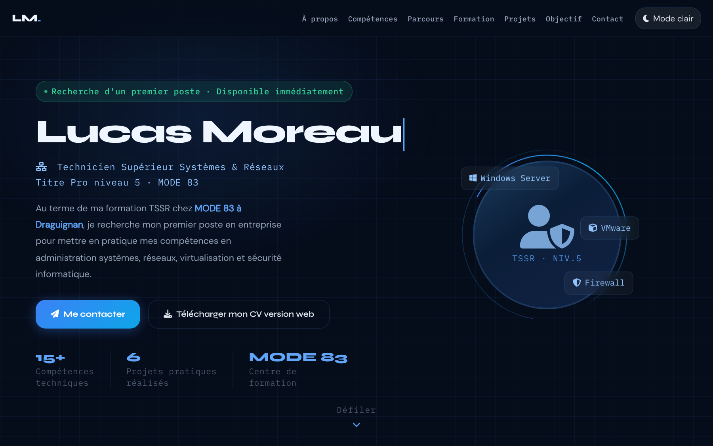
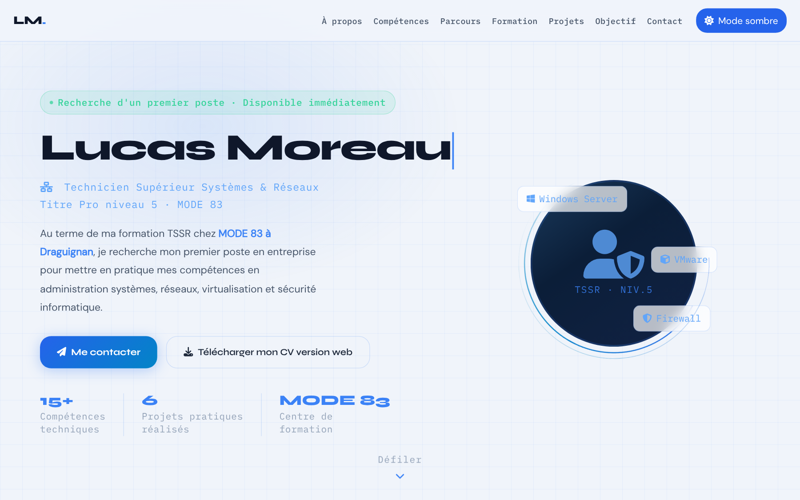

Bootstrap — la grille
- Rôle
- Disposer le texte (7 colonnes) et l'avatar (5 colonnes) côte à côte sur grand écran, l'un sous l'autre sur mobile.
- Documentation
- Grid system · Gutters · Breakpoints
- Lignes concernées
- 467 à 470, 521.
Série « Portfolio TSSR » · 20 épisodes
Objectif de l'épisode
Un recruteur décide en quelques secondes s'il continue à lire : ces secondes-là se passent sur le Hero. Vous allez construire une grille façon salle serveur, un halo qui flotte, le nom qui s'écrit lettre par lettre, un avatar entouré de deux anneaux qui tournent en sens inverse, des badges flottants et des statistiques animées.
Partie 2
À la fin de cet épisode, vous serez capable de construire un écran d'accueil complet et animé, en combinant la grille Bootstrap, des animations CSS et deux petits programmes JavaScript.
row, col-lg-7, col-lg-5).::before, ::after et des dégradés.@keyframes et la propriété animation.clamp() et adapter la page aux petits écrans avec @media.Les mots des épisodes précédents sont dans les listes des épisodes 1, 2 et 3.
row) contient des colonnes (col-lg-7 = 7 colonnes sur 12 à partir de 992 pixels).@keyframes, jouée par la propriété animation.@keyframesfrom), à l'arrivée (to), ou à des pourcentages.transformtranslate), agrandir (scale) ou tourner (rotate) un élément, sans changer la mise en page.clamp()clamp(minimum, idéal, maximum).vw / vhvw) ou de la hauteur (vh) de la fenêtre.@media : du CSS qui ne s'applique que sous ou au-dessus d'une certaine largeur d'écran.letconst, mais pour une valeur qui va changer (un compteur, un drapeau).requestAnimationFramePartie 3
Cochez chaque case quand l'étape est faite. Vos coches sont mémorisées sur cet ordinateur.
Tout le nouveau code est écrit dans index.html. config.js, images/ et ressources/ restent identiques : l'avatar est une icône Font Awesome, pas une photo.
Partie 4 · par rapport à l'épisode 3
L'épisode 4 ajoute quatre blocs et remplace le bloc provisoire de l'épisode 3. Les numéros de ligne ci-dessous sont ceux de votre fichier de l'épisode 3 (302 lignes).
#themeToggle:focus-visible et la ligne vide qui suit.#hero { à @keyframes bounceDown, 204 lignes) : dans le premier <style>, juste avant #toast { (ligne 196).@media : après #toast.show (ligne 205) et la ligne vide, juste avant :focus-visible (ligne 207).<style>, toast, barre de navigation, jusqu'à <main id="main-content">.<div class="container" style="…">, le <h1>, le <p> et </div>) et collez à sa place la section Hero et l'espace provisoire (76 lignes), entre <main id="main-content"> et </main>.</main>, Bootstrap JS, module thème, module de la barre, et la ligne vide.function showToast (ligne 293).showToast.} de showToast (ligne 299), juste avant </script> (ligne 300).</script>, </body>, </html>.Résultat : le fichier passe de 302 à 624 lignes. Les numéros cités dans le reste de cette page sont ceux du nouveau fichier.
Le Hero remplace le contenu provisoire de l'épisode 3. Ces lignes disparaissent :
<div class="container" style="padding-top: 7rem; min-height: 200vh;">
<h1>Lucas Moreau</h1>
<p>Technicien Supérieur Systèmes & Réseaux</p>
</div>Où sont passés le nom et le métier ?
<h1> est réécrit dans le Hero (ligne 476), avec un identifiant et une classe : <h1 id="hero-title" class="hero-title">. Le nom est dans un <span> que le JavaScript « retape ».<p class="hero-subtitle"> (ligne 480), complété par « Titre Pro niveau 5 · MODE 83 ».padding-top: 7rem provisoires sont remplacés par le padding de #hero (ligne 200), et min-height: 200vh par min-height: 100vh (ligne 197) plus l'espace provisoire de la ligne 541.+ = à ajouter, − = à supprimer ; les autres lignes existent déjà.
Zone 1 — dans le premier <style>
#themeToggle:focus-visible { … }
#hero { … }
… (tout le CSS du Hero)
@keyframes bounceDown { … }
#toast { … }
#toast.show { … }
@media (max-width: 991.98px) { … }
… (3 autres règles @media)
:focus-visible { … }Zone 2 — dans le <main>
<main id="main-content">
<div class="container" style="padding-top: 7rem; min-height: 200vh;">
… (h1, p, /div)
<section id="hero" aria-labelledby="hero-title">
… (le Hero)
</section>
<div aria-hidden="true" style="height: 60vh;"></div>
</main>Zone 3 — dans le <script>
})(); (fin du module de la barre)
(function () { (module des compteurs)
…
})();
function showToast(msg, duration) { … }
(function () { (module machine à écrire)
…
})();
</script>Deux règles de placement à retenir
@media vont après les règles qu'elles modifient : à poids égal, la dernière écrite gagne. Placées avant le CSS du Hero, elles seraient écrasées.<script>, en fin de page : ils cherchent des éléments du Hero (#hero, #typing-name…) qui doivent déjà exister.Partie 5
Les règles pour reconnaître une source officielle restent celles de l'épisode 1. Les liens marqués s'ouvrent dans un nouvel onglet.
clamp() doit permettre un agrandissement suffisant quand on zoome.Partie 6
Même cycle : écrire, enregistrer, actualiser, observer, comprendre. On commence par le HTML, puis on habille le Hero bloc par bloc, et on termine par le JavaScript. Les longs blocs se copient depuis la partie 4 ou depuis le code complet (partie 8).
Supprimez les 4 lignes du bloc provisoire, puis collez le « Remplacement (section Hero) » à leur place (lignes 466 à 541).
Vous voyez : tout le contenu du Hero, encore brut : le texte du badge, le nom, le métier, la présentation, deux liens, des statistiques à « 0 », une icône et trois textes (Windows Server, Firewall, VMware). Sur grand écran, la grille Bootstrap place déjà l'avatar à droite.
Vous voyez : le Hero occupe tout l'écran, un quadrillage bleu très discret apparaît, et un halo bleu flotte lentement en haut à gauche.
Vous voyez : une pilule verte en police terminal, avec un point vert qui pulse comme un voyant.
Vous voyez : le nom en très grand, en police Syne, suivi d'un curseur bleu qui clignote. Rétrécissez la fenêtre : la taille du nom diminue en douceur, grâce à clamp().
Vous voyez : un disque bleu foncé avec l'icône bouclier, entouré de deux anneaux lumineux qui tournent en sens inverse. Pour comprendre l'astuce du masque, faites le défi de la partie 14.
Vous voyez : trois badges en verre autour de l'avatar, qui montent et descendent chacun à son rythme.
Vous voyez : un bouton bleu en dégradé et un bouton contour. Survolez-les : ils montent légèrement. Au clavier (Tab), un contour bleu épais les entoure.
Vous voyez : trois gros chiffres (encore à 0) avec leur légende, séparés par des traits verticaux.
Vous voyez : « Défiler » et une flèche qui rebondit, centrés en bas du Hero.
Pour l'observer : vue mobile (Ctrl+Maj+M). L'avatar passe sous le texte, les badges flottants disparaissent, et sur un téléphone les séparateurs des statistiques aussi.
Vous voyez : au chargement, les chiffres restent à 0. Faites défiler un peu : ils montent jusqu'à 15+, 6 et MODE 83 en 1,4 seconde, en ralentissant à l'arrivée. Ils ne se relancent pas.
Vous voyez : à chaque chargement, le nom s'efface puis s'écrit lettre par lettre ; trois secondes après la dernière lettre, le curseur s'arrête de clignoter.
Vous avez terminé quand votre fichier fait 624 lignes, identiques au code de référence (bouton « Surligner les ajouts » de la partie 8), sans erreur rouge dans la Console.
Partie 7 · la plus importante
Chaque fiche répond aux quatre questions Quoi ?, Pourquoi ?, Comment ? et Où ?. Les numéros sont ceux du nouveau fichier de 624 lignes.
Lire une animation CSS
animation: spinRing 8s linear infinite;
@keyframes spinRing { to { transform: rotate(360deg); } }La propriété animation dit quoi jouer (le nom spinRing), combien de temps (8 s), comment (linear = vitesse constante) et combien de fois (infinite). La règle @keyframes du même nom décrit ce qui change : ici, un tour complet.
Ces lignes existent déjà ; seul leur numéro a changé. Le lien ouvre la fiche de l'épisode où elles ont été expliquées (les dossiers des épisodes doivent être côte à côte).
| Ligne (épisode 4) | Code | Fiche |
|---|---|---|
| 1 | <!DOCTYPE html> | Épisode 1, ligne 1 |
| 2 | <html lang="fr" data-theme="dark" dir="ltr"> | Épisode 1, ligne 2 |
| 3 | <head> | Épisode 1, ligne 3 |
| 4 | <meta charset="UTF-8" /> | Épisode 1, ligne 4 |
| 5 | <meta name="viewport" content="width=device-width, initia… | Épisode 1, ligne 5 |
| 6 | <meta name="description" content="Portfolio professionnel… | Épisode 1, ligne 6 |
| 7 | <meta name="keywords" content="TSSR, technicien systèmes … | Épisode 1, ligne 7 |
| 8 | <meta name="robots" content="index, follow" /> | Épisode 1, ligne 8 |
| 9 | <meta name="theme-color" content="#060d1a" /> | Épisode 1, ligne 9 |
| 10 | <meta name="author" content="Lucas Moreau" /> | Épisode 1, ligne 10 |
| 12 | <link rel="preconnect" href="https://fonts.googleapis.com… | Épisode 1, ligne 12 |
| 13 | <link rel="preconnect" href="https://fonts.gstatic.com" c… | Épisode 1, ligne 13 |
| 14 | <link href="https://fonts.googleapis.com/css2?family=Syne… | Épisode 1, ligne 14 |
| 16 | <link rel="stylesheet" href="https://cdn.jsdelivr.net/npm… | Épisode 1, ligne 16 |
| 17 | <link rel="stylesheet" href="https://cdnjs.cloudflare.com… | Épisode 1, ligne 17 |
| 18 | <link rel="stylesheet" href="https://cdnjs.cloudflare.com… | Épisode 1, ligne 18 |
| 20 | <script src="config.js"></script> | Épisode 1, ligne 20 |
| 21 | <script src="https://cdnjs.cloudflare.com/ajax/libs/pdf.j… | Épisode 1, ligne 21 |
| 23 | <link rel="icon" type="image/png" sizes="32x32" href="ima… | Épisode 1, ligne 23 |
| 24 | <link rel="icon" type="image/png" sizes="192x192" href="i… | Épisode 1, ligne 24 |
| 25 | <link rel="icon" type="image/webp" href="images/favicon-4… | Épisode 1, ligne 25 |
| 26 | <link rel="apple-touch-icon" sizes="180x180" href="images… | Épisode 1, ligne 26 |
| 28 | <title>Portfolio TSSR | Recherche d'emploi – Technicien S… | Épisode 1, ligne 28 |
| 29 | <style> | Épisode 2, ligne 29 |
| 30 | :root { | Épisode 2, ligne 30 |
| 31 | --clr-bg: #060d1a; | Épisode 2, ligne 31 |
| 32 | --clr-bg2: #0b1628; | Épisode 2, ligne 32 |
| 33 | --clr-surface: rgba(255,255,255,.04); | Épisode 2, ligne 33 |
| 34 | --clr-surface2: rgba(255,255,255,.07); | Épisode 2, ligne 34 |
| 35 | --clr-border: rgba(96,165,250,.18); | Épisode 2, ligne 35 |
| 36 | --clr-accent: #3b82f6; | Épisode 2, ligne 36 |
| 37 | --clr-accent2: #60a5fa; | Épisode 2, ligne 37 |
| 38 | --clr-accent3: #93c5fd; | Épisode 2, ligne 38 |
| 39 | --clr-teal: #0ea5e9; | Épisode 2, ligne 39 |
| 40 | --clr-cyan: #22d3ee; | Épisode 2, ligne 40 |
| 41 | --clr-text: #e2e8f0; | Épisode 2, ligne 41 |
| 42 | --clr-text-soft: #94a3b8; | Épisode 2, ligne 42 |
| 43 | --clr-text-faint: #475569; | Épisode 2, ligne 43 |
| 44 | --clr-heading: #f0f6ff; | Épisode 2, ligne 44 |
| 45 | --clr-white: #ffffff; | Épisode 2, ligne 45 |
| 46 | --clr-danger: #f87171; | Épisode 2, ligne 46 |
| 47 | --clr-success: #34d399; | Épisode 2, ligne 47 |
| 48 | --clr-warn: #fbbf24; | Épisode 2, ligne 48 |
| 49 | --radius-sm: 6px; | Épisode 2, ligne 49 |
| 50 | --radius-md: 12px; | Épisode 2, ligne 50 |
| 51 | --radius-lg: 20px; | Épisode 2, ligne 51 |
| 52 | --radius-xl: 32px; | Épisode 2, ligne 52 |
| 53 | --shadow-glow: 0 0 40px rgba(59,130,246,.25); | Épisode 2, ligne 53 |
| 54 | --shadow-card: 0 8px 32px rgba(0,0,0,.45); | Épisode 2, ligne 54 |
| 55 | --trans: .3s cubic-bezier(.4,0,.2,1); | Épisode 2, ligne 55 |
| 56 | --font-display: 'Syne', sans-serif; | Épisode 2, ligne 56 |
| 57 | --font-mono: 'IBM Plex Mono', monospace; | Épisode 2, ligne 57 |
| 58 | --font-body: 'DM Sans', sans-serif; | Épisode 2, ligne 58 |
| 59 | --fz-min: 1.05rem; | Épisode 2, ligne 59 |
| 60 | } | Épisode 2, ligne 60 |
| 62 | [data-theme="light"] { | Épisode 2, ligne 62 |
| 63 | --clr-bg: #f0f4fa; | Épisode 2, ligne 63 |
| 64 | --clr-bg2: #e2e8f0; | Épisode 2, ligne 64 |
| 65 | --clr-surface: rgba(255,255,255,.7); | Épisode 2, ligne 65 |
| 66 | --clr-surface2: rgba(255,255,255,.9); | Épisode 2, ligne 66 |
| 67 | --clr-border: rgba(59,130,246,.2); | Épisode 2, ligne 67 |
| 68 | --clr-accent: #2563eb; | Épisode 2, ligne 68 |
| 69 | --clr-accent2: #3b82f6; | Épisode 2, ligne 69 |
| 70 | --clr-accent3: #60a5fa; | Épisode 2, ligne 70 |
| 71 | --clr-teal: #0284c7; | Épisode 2, ligne 71 |
| 72 | --clr-cyan: #0891b2; | Épisode 2, ligne 72 |
| 73 | --clr-text: #1e293b; | Épisode 2, ligne 73 |
| 74 | --clr-text-soft: #475569; | Épisode 2, ligne 74 |
| 75 | --clr-text-faint: #94a3b8; | Épisode 2, ligne 75 |
| 76 | --clr-heading: #0f172a; | Épisode 2, ligne 76 |
| 77 | --clr-white: #ffffff; | Épisode 2, ligne 77 |
| 78 | --shadow-glow: 0 0 40px rgba(37,99,235,.15); | Épisode 2, ligne 78 |
| 79 | --shadow-card: 0 8px 32px rgba(0,0,0,.12); | Épisode 2, ligne 79 |
| 80 | } | Épisode 2, ligne 80 |
| 82 | *, *::before, *::after { box-sizing: border-box; margin: … | Épisode 2, ligne 82 |
| 84 | html { scroll-behavior: smooth; font-size: 16px; } | Épisode 2, ligne 84 |
| 86 | body { | Épisode 2, ligne 86 |
| 87 | font-family: var(--font-body); | Épisode 2, ligne 87 |
| 88 | background-color: var(--clr-bg); | Épisode 2, ligne 88 |
| 89 | color: var(--clr-text); | Épisode 2, ligne 89 |
| 90 | font-size: var(--fz-min); | Épisode 2, ligne 90 |
| 91 | line-height: 1.7; | Épisode 2, ligne 91 |
| 92 | overflow-x: hidden; | Épisode 2, ligne 92 |
| 93 | transition: background-color var(--trans), color var(--tr… | Épisode 2, ligne 93 |
| 94 | } | Épisode 2, ligne 94 |
| 96 | ::-webkit-scrollbar { width: 7px; } | Épisode 2, ligne 96 |
| 97 | ::-webkit-scrollbar-track { background: var(--clr… | Épisode 2, ligne 97 |
| 98 | ::-webkit-scrollbar-thumb { | Épisode 2, ligne 98 |
| 99 | background: linear-gradient(180deg, var(--clr-accent), va… | Épisode 2, ligne 99 |
| 100 | border-radius: 10px; height: 120px; | Épisode 2, ligne 100 |
| 101 | } | Épisode 2, ligne 101 |
| 102 | ::-webkit-scrollbar-thumb:hover { | Épisode 2, ligne 102 |
| 103 | background: linear-gradient(180deg, var(--clr-accent2), v… | Épisode 2, ligne 103 |
| 104 | box-shadow: 0 0 8px var(--clr-accent); | Épisode 2, ligne 104 |
| 105 | } | Épisode 2, ligne 105 |
| 107 | .skip-link { | Épisode 2, ligne 107 |
| 108 | position: absolute; | Épisode 2, ligne 108 |
| 109 | top: -60px; left: 1rem; | Épisode 2, ligne 109 |
| 110 | background: var(--clr-accent); | Épisode 2, ligne 110 |
| 111 | color: var(--clr-white); | Épisode 2, ligne 111 |
| 112 | padding: .6rem 1.2rem; | Épisode 2, ligne 112 |
| 113 | border-radius: var(--radius-md); | Épisode 2, ligne 113 |
| 114 | font-weight: 600; | Épisode 2, ligne 114 |
| 115 | font-size: var(--fz-min); | Épisode 2, ligne 115 |
| 116 | z-index: 9999; | Épisode 2, ligne 116 |
| 117 | transition: top .2s; | Épisode 2, ligne 117 |
| 118 | text-decoration: none; | Épisode 2, ligne 118 |
| 119 | } | Épisode 2, ligne 119 |
| 120 | .skip-link:focus { top: 1rem; } | Épisode 2, ligne 120 |
| 122 | #read-progress { | Épisode 2, ligne 122 |
| 123 | position: fixed; top: 0; left: 0; | Épisode 2, ligne 123 |
| 124 | height: 3px; width: 0%; | Épisode 2, ligne 124 |
| 125 | background: linear-gradient(90deg, var(--clr-accent), var… | Épisode 2, ligne 125 |
| 126 | z-index: 9998; | Épisode 2, ligne 126 |
| 127 | transition: width .1s linear; | Épisode 2, ligne 127 |
| 128 | box-shadow: 0 0 10px var(--clr-accent); | Épisode 2, ligne 128 |
| 129 | } | Épisode 2, ligne 129 |
| 131 | #mainNav { | Épisode 3, ligne 131 |
| 132 | position: fixed; top: 0; left: 0; right: 0; | Épisode 3, ligne 132 |
| 133 | z-index: 1050; | Épisode 3, ligne 133 |
| 134 | padding: .9rem 0; | Épisode 3, ligne 134 |
| 135 | background: rgba(6,13,26,.82); | Épisode 3, ligne 135 |
| 136 | backdrop-filter: blur(18px) saturate(1.4); | Épisode 3, ligne 136 |
| 137 | -webkit-backdrop-filter: blur(18px) saturate(1.4); | Épisode 3, ligne 137 |
| 138 | border-bottom: 1px solid var(--clr-border); | Épisode 3, ligne 138 |
| 139 | transition: all var(--trans); | Épisode 3, ligne 139 |
| 140 | } | Épisode 3, ligne 140 |
| 141 | #mainNav.scrolled { | Épisode 3, ligne 141 |
| 142 | padding: .55rem 0; | Épisode 3, ligne 142 |
| 143 | background: rgba(6,13,26,.95); | Épisode 3, ligne 143 |
| 144 | box-shadow: 0 4px 30px rgba(0,0,0,.4); | Épisode 3, ligne 144 |
| 145 | } | Épisode 3, ligne 145 |
| 146 | [data-theme="light"] #mainNav { background: rgba(240,244,… | Épisode 3, ligne 146 |
| 147 | [data-theme="light"] #mainNav.scrolled { background: rgba… | Épisode 3, ligne 147 |
| 149 | .nav-brand { | Épisode 3, ligne 149 |
| 150 | font-family: var(--font-display); | Épisode 3, ligne 150 |
| 151 | font-weight: 800; font-size: 1.3rem; | Épisode 3, ligne 151 |
| 152 | color: var(--clr-heading) !important; | Épisode 3, ligne 152 |
| 153 | text-decoration: none; letter-spacing: -.02em; | Épisode 3, ligne 153 |
| 154 | } | Épisode 3, ligne 154 |
| 155 | .nav-brand span { color: var(--clr-accent2); } | Épisode 3, ligne 155 |
| 157 | .navbar-nav .nav-link { | Épisode 3, ligne 157 |
| 158 | font-family: var(--font-mono); | Épisode 3, ligne 158 |
| 159 | font-size: .92rem; | Épisode 3, ligne 159 |
| 160 | font-weight: 500; | Épisode 3, ligne 160 |
| 161 | color: var(--clr-text-soft) !important; | Épisode 3, ligne 161 |
| 162 | letter-spacing: .02em; | Épisode 3, ligne 162 |
| 163 | padding: .4rem .5rem !important; | Épisode 3, ligne 163 |
| 164 | border-radius: var(--radius-sm); | Épisode 3, ligne 164 |
| 165 | transition: all var(--trans); | Épisode 3, ligne 165 |
| 166 | position: relative; | Épisode 3, ligne 166 |
| 167 | } | Épisode 3, ligne 167 |
| 168 | .navbar-nav .nav-link::before { | Épisode 3, ligne 168 |
| 169 | content: ''; | Épisode 3, ligne 169 |
| 170 | position: absolute; bottom: 0; left: 50%; right: 50%; | Épisode 3, ligne 170 |
| 171 | height: 2px; background: var(--clr-accent2); | Épisode 3, ligne 171 |
| 172 | border-radius: 2px; transition: all var(--trans); | Épisode 3, ligne 172 |
| 173 | } | Épisode 3, ligne 173 |
| 174 | .navbar-nav .nav-link:hover, | Épisode 3, ligne 174 |
| 175 | .navbar-nav .nav-link:focus { | Épisode 3, ligne 175 |
| 176 | color: var(--clr-accent2) !important; | Épisode 3, ligne 176 |
| 177 | background: rgba(59,130,246,.08); | Épisode 3, ligne 177 |
| 178 | } | Épisode 3, ligne 178 |
| 179 | .navbar-nav .nav-link:hover::before, | Épisode 3, ligne 179 |
| 180 | .navbar-nav .nav-link:focus::before { left: 10%; right: 1… | Épisode 3, ligne 180 |
| 182 | #themeToggle { | Épisode 3, ligne 182 |
| 183 | background: var(--clr-surface2); | Épisode 3, ligne 183 |
| 184 | border: 1px solid var(--clr-border); | Épisode 3, ligne 184 |
| 185 | color: var(--clr-text); | Épisode 3, ligne 185 |
| 186 | padding: .4rem .9rem; | Épisode 3, ligne 186 |
| 187 | border-radius: var(--radius-lg); | Épisode 3, ligne 187 |
| 188 | cursor: pointer; font-size: var(--fz-min); | Épisode 3, ligne 188 |
| 189 | transition: all var(--trans); | Épisode 3, ligne 189 |
| 190 | display: flex; align-items: center; gap: .5rem; | Épisode 3, ligne 190 |
| 191 | white-space: nowrap; | Épisode 3, ligne 191 |
| 192 | } | Épisode 3, ligne 192 |
| 193 | #themeToggle:hover { background: var(--clr-accent); color… | Épisode 3, ligne 193 |
| 194 | #themeToggle:focus-visible { outline: 2px solid var(--clr… | Épisode 3, ligne 194 |
| 401 | #toast { | Épisode 3, ligne 196 |
| 402 | position: fixed; bottom: 5.5rem; right: 2rem; | Épisode 3, ligne 197 |
| 403 | background: var(--clr-bg2); border: 1px solid var(--clr-b… | Épisode 3, ligne 198 |
| 404 | border-radius: var(--radius-md); padding: .9rem 1.4rem; | Épisode 3, ligne 199 |
| 405 | font-size: var(--fz-min); color: var(--clr-text); z-index… | Épisode 3, ligne 200 |
| 406 | opacity: 0; transform: translateX(30px); | Épisode 3, ligne 201 |
| 407 | transition: all .35s cubic-bezier(.4,0,.2,1); | Épisode 3, ligne 202 |
| 408 | max-width: 300px; box-shadow: var(--shadow-card); pointer… | Épisode 3, ligne 203 |
| 409 | } | Épisode 3, ligne 204 |
| 410 | #toast.show { opacity: 1; transform: translateX(0); } | Épisode 3, ligne 205 |
| 417 | :focus-visible { outline: 2px solid var(--clr-accent2); o… | Épisode 2, ligne 131 |
| 418 | ::selection { background: rgba(59,130,246,.3); color: var… | Épisode 2, ligne 132 |
| 419 | </style> | Épisode 2, ligne 133 |
| 421 | <style> | Épisode 3, ligne 211 |
| 422 | .navbar-nav { flex-wrap: nowrap; } | Épisode 3, ligne 212 |
| 423 | .navbar-nav .nav-link { white-space: nowrap; } | Épisode 3, ligne 213 |
| 424 | </style> | Épisode 3, ligne 214 |
| 425 | </head> | Épisode 1, ligne 29 |
| 427 | <body> | Épisode 1, ligne 31 |
| 428 | <a href="#main-content" class="skip-link">Passer au conte… | Épisode 2, ligne 137 |
| 429 | <div id="toast" role="status" aria-live="polite"></div> | Épisode 3, ligne 219 |
| 431 | <header> | Épisode 3, ligne 221 |
| 432 | <nav id="mainNav" class="navbar navbar-expand-lg" role="n… | Épisode 3, ligne 222 |
| 433 | <div class="container-fluid px-3 px-xl-4"> | Épisode 3, ligne 223 |
| 434 | <a class="nav-brand navbar-brand" href="#hero" aria-label… | Épisode 3, ligne 224 |
| 436 | <button class="navbar-toggler border-0 p-1" type="button" | Épisode 3, ligne 226 |
| 437 | data-bs-toggle="collapse" data-bs-target="#navContent" | Épisode 3, ligne 227 |
| 438 | aria-controls="navContent" aria-expanded="false" | Épisode 3, ligne 228 |
| 439 | aria-label="Ouvrir le menu de navigation" | Épisode 3, ligne 229 |
| 440 | style="color: var(--clr-text-soft);"> | Épisode 3, ligne 230 |
| 441 | <i class="fas fa-bars" aria-hidden="true"></i> | Épisode 3, ligne 231 |
| 442 | </button> | Épisode 3, ligne 232 |
| 444 | <div class="collapse navbar-collapse" id="navContent"> | Épisode 3, ligne 234 |
| 445 | <ul class="navbar-nav ms-auto align-items-lg-center gap-1… | Épisode 3, ligne 235 |
| 446 | <li class="nav-item"><a class="nav-link" href="#about">À … | Épisode 3, ligne 236 |
| 447 | <li class="nav-item"><a class="nav-link" href="#skills">C… | Épisode 3, ligne 237 |
| 448 | <li class="nav-item"><a class="nav-link" href="#parcours"… | Épisode 3, ligne 238 |
| 449 | <li class="nav-item"><a class="nav-link" href="#formation… | Épisode 3, ligne 239 |
| 450 | <li class="nav-item"><a class="nav-link" href="#projects"… | Épisode 3, ligne 240 |
| 451 | <li class="nav-item"><a class="nav-link" href="#stage">Ob… | Épisode 3, ligne 241 |
| 452 | <li class="nav-item"><a class="nav-link" href="#contact">… | Épisode 3, ligne 242 |
| 453 | </ul> | Épisode 3, ligne 243 |
| 454 | <div class="ms-lg-3 mt-2 mt-lg-0"> | Épisode 3, ligne 244 |
| 455 | <button id="themeToggle" aria-label="Basculer le thème cl… | Épisode 3, ligne 245 |
| 456 | <i class="fas fa-moon" id="themeIcon" aria-hidden="true">… | Épisode 3, ligne 246 |
| 457 | <span id="themeLabel">Mode clair</span> | Épisode 3, ligne 247 |
| 458 | </button> | Épisode 3, ligne 248 |
| 459 | </div> | Épisode 3, ligne 249 |
| 460 | </div> | Épisode 3, ligne 250 |
| 461 | </div> | Épisode 3, ligne 251 |
| 462 | </nav> | Épisode 3, ligne 252 |
| 463 | </header> | Épisode 3, ligne 253 |
| 465 | <main id="main-content"> | Épisode 1, ligne 32 |
| 542 | </main> | Épisode 1, ligne 37 |
| 544 | <script src="https://cdn.jsdelivr.net/npm/bootstrap@5.3.0… | Épisode 3, ligne 262 |
| 546 | <script> | Épisode 3, ligne 264 |
| 547 | (function () { | Épisode 3, ligne 265 |
| 548 | const html = document.documentElement; | Épisode 3, ligne 266 |
| 549 | const themeToggle = document.getElementById('themeToggle'); | Épisode 3, ligne 267 |
| 550 | const themeIcon = document.getElementById('themeIcon'); | Épisode 3, ligne 268 |
| 551 | const themeLabel = document.getElementById('themeLabel'); | Épisode 3, ligne 269 |
| 552 | const saved = localStorage.getItem('theme') || 'dark'; | Épisode 3, ligne 270 |
| 554 | function applyTheme(t) { | Épisode 3, ligne 272 |
| 555 | html.setAttribute('data-theme', t); | Épisode 3, ligne 273 |
| 556 | localStorage.setItem('theme', t); | Épisode 3, ligne 274 |
| 557 | themeIcon.className = t === 'dark' ? 'fas fa-moon' : '… | Épisode 3, ligne 275 |
| 558 | themeLabel.textContent = t === 'dark' ? 'Mode clair' : 'M… | Épisode 3, ligne 276 |
| 559 | } | Épisode 3, ligne 277 |
| 560 | applyTheme(saved); | Épisode 3, ligne 278 |
| 561 | themeToggle.addEventListener('click', function () { | Épisode 3, ligne 279 |
| 562 | const cur = html.getAttribute('data-theme'); | Épisode 3, ligne 280 |
| 563 | applyTheme(cur === 'dark' ? 'light' : 'dark'); | Épisode 3, ligne 281 |
| 564 | showToast(cur === 'dark' ? '☀️ Mode clair activé' : '🌙 Mo… | Épisode 3, ligne 282 |
| 565 | }); | Épisode 3, ligne 283 |
| 566 | })(); | Épisode 3, ligne 284 |
| 568 | (function () { | Épisode 3, ligne 286 |
| 569 | const nav = document.getElementById('mainNav'); | Épisode 3, ligne 287 |
| 570 | window.addEventListener('scroll', function () { | Épisode 3, ligne 288 |
| 571 | nav.classList.toggle('scrolled', window.scrollY > 60); | Épisode 3, ligne 289 |
| 572 | }, { passive: true }); | Épisode 3, ligne 290 |
| 573 | })(); | Épisode 3, ligne 291 |
| 597 | function showToast(msg, duration) { | Épisode 3, ligne 293 |
| 598 | const toast = document.getElementById('toast'); | Épisode 3, ligne 294 |
| 599 | toast.textContent = msg; | Épisode 3, ligne 295 |
| 600 | toast.classList.add('show'); | Épisode 3, ligne 296 |
| 601 | clearTimeout(toast._t); | Épisode 3, ligne 297 |
| 602 | toast._t = setTimeout(function () { toast.classList.remov… | Épisode 3, ligne 298 |
| 603 | } | Épisode 3, ligne 299 |
| 622 | </script> | Épisode 3, ligne 300 |
| 623 | </body> | Épisode 1, ligne 38 |
| 624 | </html> | Épisode 1, ligne 39 |
Les lignes vides séparent les blocs pour aérer le code. Les lignes supprimées de l'épisode 3 sont présentées dans la partie 4.
#hero {Elle ouvre la règle de la section d'identifiant hero (ligne 466).
Le Hero est l'écran d'accueil, la vitrine : la première chose que voit le recruteur.
La section n'aurait aucune mise en page.
Hero = le héros de la page : la vitrine.
min-height: 100vh;La section mesure au minimum toute la hauteur de la fenêtre.
Le Hero remplit l'écran d'accueil.
La section serait juste assez haute pour son contenu.
100vh = 100 % de la hauteur de la fenêtre.
display: flex; align-items: center;La section devient un conteneur flexbox qui centre son contenu verticalement.
Le texte et l'avatar sont au milieu de l'écran, en hauteur.
Le contenu serait collé en haut de la section.
Flex + align-items: center = centré en hauteur.
position: relative; overflow: hidden;La section devient le repère des éléments positionnés (grille, halo, indicateur) et coupe tout ce qui dépasse.
Le halo animé et les badges flottants débordent : overflow: hidden les coupe proprement.
Le halo pourrait créer un défilement horizontal.
relative = repère ; hidden = on coupe ce qui dépasse.
padding: 7rem 0 4rem;7 rem en haut, 0 sur les côtés, 4 rem en bas.
Les 7 rem du haut dégagent le contenu de la barre de navigation fixe : c'est ce qui remplace le style provisoire de l'épisode 3.
Le haut du Hero passerait sous la barre.
Trois valeurs : haut, côtés, bas.
}Elle referme la règle #hero, ouverte ligne 196.
Chaque accolade ouverte a sa partenaire fermante, alignée sous elle.
Les règles suivantes seraient lues comme faisant partie de ce bloc : le CSS ou le script serait cassé.
Ce qui s'ouvre se ferme.
#hero::before {Elle crée un pseudo-élément ::before dans la section : il dessinera une grille de fond.
Le quadrillage évoque un plan de salle serveur, sans aucune image.
Pas de grille de fond.
Un décor créé par le CSS seul.
content: ''; position: absolute; inset: 0;Contenu vide (obligatoire pour qu'il existe), positionné en absolu, collé aux quatre bords.
Le calque de grille recouvre exactement la section.
La grille n'existerait pas, ou ne couvrirait pas la section.
insettop, right, bottom et left.inset: 0 = top, right, bottom et left à 0 d'un coup.
background-image:Elle ouvre la propriété background-image ; sa valeur continue sur les deux lignes suivantes.
Une valeur longue peut s'écrire sur plusieurs lignes : elle se termine au point-virgule de la ligne 206.
Pas de fond pour le calque.
La déclaration s'arrête au point-virgule, pas au bout de la ligne.
linear-gradient(rgba(59,130,246,.07) 1px, transparent 1px),Un dégradé de haut en bas : 1 pixel de bleu très pâle (7 %), puis transparent.
Répété en mosaïque, il trace les lignes horizontales de la grille.
Plus de lignes horizontales.
rgba(59,130,246,.07) 1pxtransparent 1px1 px de couleur, le reste transparent : une ligne.
linear-gradient(90deg, rgba(59,130,246,.07) 1px, transparent 1px);Le même dégradé, tourné de 90 degrés (de gauche à droite) : il trace les lignes verticales.
Les deux couches superposées forment le quadrillage. Le point-virgule termine la déclaration.
Plus de lignes verticales.
Horizontal + vertical = grille.
background-size: 40px 40px; z-index: 0;Le motif est répété tous les 40 pixels, en largeur et en hauteur ; le calque reste au fond (z-index: 0).
Chaque carreau mesure 40 × 40 pixels.
Un seul trait géant au lieu d'une grille.
40 px = la taille d'une dalle de la salle serveur.
}Elle referme la grille, ouverte ligne 202.
Chaque accolade ouverte a sa partenaire fermante, alignée sous elle.
Les règles suivantes seraient lues comme faisant partie de ce bloc : le CSS ou le script serait cassé.
Ce qui s'ouvre se ferme.
#hero::after {Elle crée un second pseudo-élément, ::after : un halo bleu qui flotte.
Une lumière douce qui donne de la profondeur.
Pas de halo.
::before = grille, ::after = halo.
content: ''; position: absolute;Contenu vide, position absolue.
Pour pouvoir placer le halo précisément.
Pas de halo.
Pas de content, pas de pseudo-élément.
top: -10%; left: -10%; width: 70%; height: 70%;Le halo commence 10 % au-dessus et à gauche de la section, et mesure 70 % de sa largeur et de sa hauteur.
Il déborde volontairement : overflow: hidden (ligne 199) coupe ce qui dépasse.
Le halo n'aurait pas de taille.
Des valeurs négatives = on sort du cadre.
background: radial-gradient(ellipse at center, rgba(59,130,246,.12) 0%, transparent 65%);Un dégradé qui part du centre : bleu à 12 % au milieu, transparent à 65 % du rayon.
C'est la lueur diffuse.
Le halo serait invisible.
radial = depuis le centre, comme les rayons d'une roue.
z-index: 0; animation: floatGlow 6s ease-in-out infinite alternate;Le halo reste au fond et joue l'animation floatGlow en 6 secondes, sans fin, en aller-retour.
Un mouvement lent et doux.
Le halo serait immobile.
floatGlow6sease-in-outinfinitealternateNom, durée, courbe, répétition, direction.
}Elle referme le halo, ouvert ligne 209.
Chaque accolade ouverte a sa partenaire fermante, alignée sous elle.
Les règles suivantes seraient lues comme faisant partie de ce bloc : le CSS ou le script serait cassé.
Ce qui s'ouvre se ferme.
@keyframes floatGlow {Elle ouvre la définition des étapes de l'animation nommée floatGlow.
@keyframes décrit les étapes ; la propriété animation (ligne 213) les joue.
L'animation de la ligne 213 ne ferait rien.
@.keyframes = images clés, comme en dessin animé.
from { transform: translate(0,0) scale(1); }Au départ, le halo est à sa place et à sa taille normale.
C'est le point A du mouvement.
Le navigateur prendrait l'état normal de l'élément comme départ : visuellement, presque rien ne changerait.
from = au début (0 %).
to { transform: translate(4%,3%) scale(1.05); }À l'arrivée, le halo s'est décalé de 4 % à droite et 3 % vers le bas, et grossi de 5 %.
Le point B : un petit déplacement, très doux.
Plus de mouvement.
to = à la fin (100 %).
}Elle referme la règle @keyframes floatGlow, ouverte ligne 215.
Chaque accolade ouverte a sa partenaire fermante, alignée sous elle.
Les règles suivantes seraient lues comme faisant partie de ce bloc : le CSS ou le script serait cassé.
Ce qui s'ouvre se ferme.
.hero-content { position: relative; z-index: 1; }La colonne de texte passe au-dessus de la grille et du halo (z-index: 1 contre 0).
Le texte reste net et cliquable.
La grille et le halo pourraient passer par-dessus le texte.
Décor à 0, contenu à 1.
.status-badge {Elle ouvre la règle du badge vert en haut du Hero.
Il annonce tout de suite l'essentiel : le candidat cherche un poste, maintenant.
Le badge serait du texte brut.
Le badge = l'enseigne « ouvert ».
display: inline-flex; align-items: center; gap: .5rem;Le badge est une boîte flexible qui ne prend que la largeur de son contenu ; le point et le texte sont centrés et espacés.
Le point vert et le texte restent alignés.
Le badge occuperait toute la largeur.
inline-flex = flex, mais seulement aussi large que le contenu.
background: rgba(52,211,153,.1);Fond vert émeraude à 10 %.
Le vert évoque « disponible ».
Pas de fond.
Vert = feu vert.
border: 1px solid rgba(52,211,153,.3);Bordure verte à 30 %.
Elle dessine la forme du badge.
Pas de contour.
Épaisseur, style, couleur.
color: var(--clr-success);Le texte prend la couleur succès.
Premier usage de --clr-success, préparée à l'épisode 2.
Texte gris.
Cette couleur n'est pas redéfinie pour le thème clair : en thème clair, ce vert sur fond très clair est peu contrasté.
success = vert.
font-family: var(--font-mono);Police IBM Plex Mono.
Style « terminal ».
Police DM Sans.
Mono = terminal.
font-size: var(--fz-min); font-weight: 500;Taille minimale, graisse moyenne.
Lisible, légèrement appuyé.
Taille et graisse héritées.
500 = medium.
letter-spacing: .04em;Les lettres sont un peu espacées.
Rendu « étiquette ».
Espacement normal.
Positif = écarté.
padding: .4rem 1rem; border-radius: 100px;Espace intérieur et coins totalement arrondis.
Un rayon de 100 pixels, plus grand que la moitié de la hauteur, donne une pilule parfaite.
Badge rectangulaire et tassé.
Grand rayon = pilule.
margin-bottom: 1.4rem;1,4 rem d'espace sous le badge.
Il se détache du nom.
Badge collé au titre.
margin = espace à l'extérieur.
}Elle referme la règle du badge, ouverte ligne 221.
Chaque accolade ouverte a sa partenaire fermante, alignée sous elle.
Les règles suivantes seraient lues comme faisant partie de ce bloc : le CSS ou le script serait cassé.
Ce qui s'ouvre se ferme.
.status-dot {Elle ouvre la règle du petit point du badge.
Un point qui « pulse », comme un voyant allumé.
Pas de point visible.
Le voyant « en ligne ».
width: 7px; height: 7px;Le point mesure 7 × 7 pixels.
Il deviendra rond à la ligne suivante.
Le span vide n'aurait pas de taille : invisible.
Un élément vide n'a pas de taille : on la lui donne.
background: var(--clr-success); border-radius: 50%;Fond vert, coins arrondis à 50 % : un cercle.
border-radius: 50% sur un carré donne un cercle.
Point invisible ou carré.
Carré + 50 % = cercle.
animation: pulse-dot 1.6s ease infinite; flex-shrink: 0;Il joue l'animation pulse-dot en boucle ; flex-shrink: 0 l'empêche de rétrécir.
Le point bat comme un voyant ; il garde sa taille même si le texte est long.
Point fixe, et il pourrait s'écraser sur mobile.
shrink = rétrécir : 0 = jamais.
}Elle referme la règle du point, ouverte ligne 232.
Chaque accolade ouverte a sa partenaire fermante, alignée sous elle.
Les règles suivantes seraient lues comme faisant partie de ce bloc : le CSS ou le script serait cassé.
Ce qui s'ouvre se ferme.
@keyframes pulse-dot {Elle ouvre les étapes de l'animation pulse-dot.
Le battement du voyant.
Le point ne pulserait pas.
Les étapes sont en pourcentages de la durée.
0%,100% { opacity: 1; transform: scale(1); }Au début et à la fin, le point est opaque et à taille normale.
La virgule regroupe deux étapes identiques.
L'animation partirait de l'état normal : différence minime.
0 % et 100 % identiques = une boucle sans saut.
50% { opacity: .5; transform: scale(.75); }À mi-parcours, le point est à 50 % d'opacité et à 75 % de sa taille.
C'est le « battement ».
Plus de pulsation.
50 % = le creux du battement.
}Elle referme la règle @keyframes pulse-dot, ouverte ligne 237.
Chaque accolade ouverte a sa partenaire fermante, alignée sous elle.
Les règles suivantes seraient lues comme faisant partie de ce bloc : le CSS ou le script serait cassé.
Ce qui s'ouvre se ferme.
.hero-title {Elle ouvre la règle du <h1> du Hero.
Le nom du candidat, en très grand.
Titre au style Bootstrap.
Le nom en vedette.
font-family: var(--font-display); font-weight: 800;Police Syne, graisse 800.
La police d'affiche du portfolio.
Titre en DM Sans, poids moyen.
Display = affiche.
font-size: clamp(2.4rem, 6vw, 4.2rem);La taille vaut 6 % de la largeur de la fenêtre, mais jamais moins de 2,4 rem ni plus de 4,2 rem.
Le titre grandit avec l'écran, dans des limites lisibles : c'est de la typographie fluide.
Taille fixe de Bootstrap.
2.4rem6vw4.2remclamp(min, idéal, max) : une pince qui borne la valeur.
line-height: 1.1; color: var(--clr-heading);Interligne de 1,1 et couleur des titres.
Un gros titre sur deux lignes reste compact.
Lignes très espacées.
Gros texte = interligne serré.
letter-spacing: -.03em; margin-bottom: 1rem;Lettres légèrement resserrées, 1 rem d'espace sous le titre.
Effet « affiche » plus dense.
Espacement normal.
Négatif = serré.
}Elle referme la règle du titre, ouverte ligne 242.
Chaque accolade ouverte a sa partenaire fermante, alignée sous elle.
Les règles suivantes seraient lues comme faisant partie de ce bloc : le CSS ou le script serait cassé.
Ce qui s'ouvre se ferme.
.hero-title .accent { color: var(--clr-accent2); }Un élément de classe accent placé dans le titre serait coloré en bleu clair.
Règle reprise du fichier final ; aucun élément du Hero ne porte encore cette classe. Elle ne fait donc rien pour l'instant.
Aucun changement visible.
Prévu pour plus tard : une règle peut exister sans viser personne.
.hero-title .typing-cursor {Elle ouvre la règle du curseur placé après le nom.
Il imite le curseur d'un terminal pendant l'effet machine à écrire.
Pas de curseur visible.
Le « | » du terminal.
display: inline-block; width: 3px; height: 1em;Une boîte en ligne de 3 pixels de large et de la hauteur du texte.
inline-block permet de donner une taille à un élément qui reste dans la ligne de texte.
Le span vide serait invisible.
1em = la hauteur du texte.
background: var(--clr-accent2); margin-left: 3px;Le curseur est bleu, à 3 pixels du texte.
Il se voit sans coller au nom.
Curseur transparent.
Bleu = la couleur d'accent.
vertical-align: text-bottom;Le curseur s'aligne sur le bas des lettres.
Il est posé à la bonne hauteur.
Il serait aligné sur la ligne de base, un peu trop haut.
text-bottom = au ras du texte.
animation: blink .75s step-end infinite;Il joue l'animation blink toutes les 0,75 seconde, sans transition.
step-end fait un saut net (visible / invisible) au lieu d'un fondu, comme un vrai curseur.
Curseur fixe.
step = en marche d'escalier, pas en pente.
}Elle referme la règle du curseur, ouverte ligne 249.
Chaque accolade ouverte a sa partenaire fermante, alignée sous elle.
Les règles suivantes seraient lues comme faisant partie de ce bloc : le CSS ou le script serait cassé.
Ce qui s'ouvre se ferme.
@keyframes blink { 50% { opacity: 0; } }À mi-parcours, le curseur devient invisible.
Avec step-end, il alterne visible et invisible.
Pas de clignotement.
Une seule étape suffit : les autres reprennent l'état normal.
.hero-subtitle {Elle ouvre la règle du sous-titre (le métier).
Il présente le titre professionnel sous le nom.
Style de paragraphe normal.
Sous le titre, le métier.
font-family: var(--font-mono);Police IBM Plex Mono.
Rappel du monde technique.
DM Sans.
Mono = technique.
font-size: clamp(var(--fz-min), 1.8vw, 1.15rem);1,8 % de la largeur, entre la taille minimale et 1,15 rem.
Lisible sur mobile, un peu plus grand sur ordinateur.
Taille fixe.
clamp accepte aussi des variables.
color: var(--clr-accent3); letter-spacing: .04em; margin-bottom: 1.3rem;Bleu très clair, lettres espacées, espace dessous.
Le sous-titre se distingue du texte courant.
Texte gris collé à la description.
Accent 3 = le bleu le plus pâle.
}Elle referme la règle du sous-titre, ouverte ligne 257.
Chaque accolade ouverte a sa partenaire fermante, alignée sous elle.
Les règles suivantes seraient lues comme faisant partie de ce bloc : le CSS ou le script serait cassé.
Ce qui s'ouvre se ferme.
.hero-desc {Elle ouvre la règle du paragraphe de présentation.
Deux ou trois phrases qui donnent envie de lire la suite.
Paragraphe ordinaire.
desc = description.
font-size: clamp(var(--fz-min), 2vw, 1.15rem);2 % de la largeur, bornée.
Même principe que le sous-titre.
Taille fixe.
Fluide mais borné.
color: var(--clr-text-soft);Couleur du texte secondaire.
Moins appuyé que le titre.
Couleur du texte courant.
soft = adouci.
max-width: 520px; margin-bottom: 2.2rem; line-height: 1.8;Largeur maximale de 520 pixels, espace dessous, interligne aéré.
Des lignes trop longues fatiguent les yeux : 520 pixels donnent une largeur confortable.
Lignes très longues sur grand écran.
Une ligne courte se lit mieux.
}Elle referme la règle de la présentation, ouverte ligne 262.
Chaque accolade ouverte a sa partenaire fermante, alignée sous elle.
Les règles suivantes seraient lues comme faisant partie de ce bloc : le CSS ou le script serait cassé.
Ce qui s'ouvre se ferme.
.hero-avatar-wrap {Elle ouvre la règle de la colonne de droite.
Elle centre l'avatar.
Avatar collé à gauche de sa colonne.
wrap = l'emballage.
position: relative; display: flex;Repère de positionnement et conteneur flex.
Pour centrer l'avatar.
Pas de centrage.
Flex pour centrer.
justify-content: center; align-items: center;Centré horizontalement et verticalement.
L'avatar est au milieu de la colonne.
Avatar en haut à gauche.
justify = horizontal ; align = vertical (en ligne).
}Elle referme la règle de la colonne de l'avatar, ouverte ligne 268.
Chaque accolade ouverte a sa partenaire fermante, alignée sous elle.
Les règles suivantes seraient lues comme faisant partie de ce bloc : le CSS ou le script serait cassé.
Ce qui s'ouvre se ferme.
.hero-avatar-ring {Elle ouvre la règle du bloc qui porte l'avatar et ses deux anneaux.
Les anneaux sont dessinés autour de lui.
Pas de taille, pas d'anneaux.
ring = anneau.
position: relative;Repère de positionnement.
Les anneaux et les badges flottants se placent par rapport à lui.
Ils se placeraient par rapport à la colonne.
Le repère des éléments absolus.
width: clamp(220px,30vw,300px);30 % de la largeur de la fenêtre, entre 220 et 300 pixels.
L'avatar s'adapte à l'écran.
Pas de largeur.
Toujours entre 220 et 300 px.
height: clamp(220px,30vw,300px);La même valeur pour la hauteur.
Un carré parfait, qui deviendra un cercle.
Pas de hauteur.
Largeur = hauteur → carré.
}Elle referme la règle du support, ouverte ligne 272.
Chaque accolade ouverte a sa partenaire fermante, alignée sous elle.
Les règles suivantes seraient lues comme faisant partie de ce bloc : le CSS ou le script serait cassé.
Ce qui s'ouvre se ferme.
.hero-avatar-ring::before,Premier sélecteur : le pseudo-élément ::before du support.
Il sera le premier anneau.
Un anneau en moins.
La virgule : même règle pour deux éléments.
.hero-avatar-ring::after {Second sélecteur : le pseudo-élément ::after.
Les deux anneaux partagent les lignes 279 à 304.
Un anneau en moins.
À partir d'ici et jusqu'à la ligne 305, l'indentation est irrégulière (2 espaces) : c'est le cas dans le fichier de référence. Le navigateur n'en tient pas compte.
Deux anneaux, une seule règle.
content: '';Les pseudo-éléments existent, sans texte.
On dessine des cercles.
Pas d'anneaux.
Toujours content pour un pseudo-élément.
position: absolute;Les anneaux se placent par rapport au support.
Pour les faire déborder autour de l'avatar.
Ils suivraient le flux.
Absolu = placé librement.
inset: -12px;Chaque anneau dépasse de 12 pixels de chaque côté du support.
L'anneau entoure l'avatar avec un petit espace.
Anneau collé au bord.
inset négatif = plus grand que le parent.
border-radius: 50%;Les anneaux sont ronds.
Comme l'avatar.
Anneaux carrés.
50 % = cercle.
border: 2px solid transparent;Une bordure de 2 pixels, invisible.
Elle réserve l'épaisseur de l'anneau : le dégradé viendra s'y afficher grâce au masque.
Pas d'épaisseur à colorier : anneau invisible.
La bordure réserve la place, le dégradé la colore.
background: conic-gradient(Elle ouvre un dégradé conique : les couleurs tournent autour du centre, comme les aiguilles d'une montre.
C'est lui qui donne l'arc lumineux de l'anneau.
Anneau sans couleur.
Conique = qui tourne autour d'un point.
from 0deg,Le dégradé commence en haut (0 degré).
Point de départ de la rotation des couleurs.
Départ en haut par défaut : aucun changement.
0° = midi sur une horloge.
var(--clr-accent),Première couleur : le bleu d'accent.
Le début de l'arc.
Arc sans bleu.
Les couleurs se suivent dans l'ordre.
var(--clr-teal),Deuxième couleur : le teal.
L'arc passe du bleu au bleu-vert.
Arc plus uniforme.
Bleu → teal.
transparent 60%À 60 % du tour, la couleur devient transparente.
L'anneau n'est coloré que sur un arc : c'est ce qui rend la rotation visible.
Cercle complet coloré : la rotation ne se verrait pas.
Un arc qui tourne se voit, un cercle plein non.
) border-box;Elle referme le dégradé et l'étend jusqu'au bord extérieur de la bordure (border-box).
Sans border-box, le fond s'arrêterait avant la bordure.
Le dégradé n'atteindrait pas la bordure.
border-box = jusqu'au bord de la bordure.
-webkit-mask:Elle ouvre un masque : seules les zones « couvertes » par le masque restent visibles.
Le masque va découper le centre pour ne garder que l'anneau. Le préfixe vise les versions de Chrome, Edge et Safari qui ne connaissent que l'écriture préfixée.
Les navigateurs récents utilisent la version standard (lignes 298 à 302) : rien ne changerait pour eux. Les anciennes versions afficheraient un disque plein.
Un masque, c'est un pochoir.
linear-gradient(#fff 0 0) padding-box,Première couche : un aplat blanc limité à la zone intérieure (padding-box, sans la bordure).
linear-gradient(#fff 0 0) est une astuce pour créer une couleur unie utilisable comme image.
La version préfixée du masque serait cassée ; les navigateurs récents utiliseraient quand même la version standard.
Couche 1 = l'intérieur.
linear-gradient(#fff 0 0);Seconde couche : le même aplat, sur toute la boîte, bordure comprise.
Il reste à retirer la couche 1 de la couche 2 : c'est le rôle de la ligne suivante.
La version préfixée du masque serait cassée ; les navigateurs récents utiliseraient quand même la version standard.
Couche 2 = tout.
-webkit-mask-composite: destination-out;Elle retire la zone intérieure de la zone totale : il ne reste que la bordure.
Résultat : seule la couronne de 2 pixels montre le dégradé. C'est l'astuce de l'anneau.
Les navigateurs récents utilisent la version standard (ligne 302) : rien ne change pour eux. Les anciennes versions de Safari et de Chrome afficheraient un disque plein.
Tout − intérieur = la couronne.
mask:La même chose avec la propriété standard, pour Firefox et les navigateurs récents.
On écrit les deux versions : chaque navigateur prend celle qu'il comprend.
Pas d'anneau dans Firefox.
Préfixée + standard = tout le monde.
linear-gradient(#fff 0 0) padding-box,Couche 1 : l'intérieur.
Identique à la ligne 293.
Le masque ne marcherait pas.
Même recette.
linear-gradient(#fff 0 0);Couche 2 : toute la boîte.
Identique à la ligne 294.
Le masque ne marcherait pas.
Même recette.
mask-composite: exclude;exclude garde uniquement les zones couvertes par une seule des deux couches : la bordure.
Équivalent standard de destination-out. Elle doit venir après la ligne mask: (298), qui remet la combinaison à sa valeur par défaut.
Le disque plein réapparaît, y compris dans les versions récentes de Chrome et Edge (vérifié dans Chromium 141).
exclude = on garde ce qui ne se superpose pas.
animation: spinRing 8s linear infinite;Les anneaux tournent en 8 secondes, à vitesse constante, sans fin.
L'arc coloré fait le tour de l'avatar.
Anneaux immobiles.
linear = vitesse constante, idéal pour une rotation.
}Elle referme la règle des deux anneaux, ouverte ligne 277.
Chaque accolade ouverte a sa partenaire fermante, alignée sous elle.
Les règles suivantes seraient lues comme faisant partie de ce bloc : le CSS ou le script serait cassé.
Ce qui s'ouvre se ferme.
.hero-avatar-ring::after {Elle ajoute des réglages propres au second anneau.
Les deux anneaux partagent tout (lignes 277 à 305), sauf ce qui suit.
Les deux anneaux seraient superposés et identiques.
On complète une règle commune.
inset: -22px; border-width: 1px; opacity: .4;Il dépasse de 22 pixels, sa bordure fait 1 pixel, il est à 40 % d'opacité.
Un anneau extérieur discret.
Anneau identique au premier.
Plus loin, plus fin, plus pâle.
animation-duration: 14s; animation-direction: reverse;Il tourne en 14 secondes, dans l'autre sens.
Les deux anneaux tournent en sens opposés.
Même rotation que le premier.
reverse = à l'envers.
}Elle referme la règle du second anneau, ouverte ligne 306.
Chaque accolade ouverte a sa partenaire fermante, alignée sous elle.
Les règles suivantes seraient lues comme faisant partie de ce bloc : le CSS ou le script serait cassé.
Ce qui s'ouvre se ferme.
@keyframes spinRing { to { transform: rotate(360deg); } }À la fin, l'élément a tourné de 360 degrés.
Un tour complet, répété sans fin.
Les anneaux ne tourneraient pas.
360° = un tour.
.hero-avatar {Elle ouvre la règle du disque central.
Il remplace une photo par une icône sur fond dégradé.
Pas de disque.
L'avatar = la photo de profil.
width: 100%; height: 100%; border-radius: 50%;Toute la taille du support, en cercle.
Le disque est entouré par les anneaux.
Pas de taille.
100 % du support.
background: linear-gradient(145deg, #1a3a5c 0%, #0b1e38 40%, #112244 100%);Un dégradé de trois bleus, en diagonale (145 degrés).
Couleurs écrites en dur : le disque reste bleu foncé, même en thème clair.
Disque transparent.
Trois arrêts de couleur : 0 %, 40 %, 100 %.
border: 3px solid var(--clr-border);Bordure bleutée de 3 pixels.
Le disque se détache.
Pas de contour.
Épaisseur, style, couleur.
display: flex; flex-direction: column;Conteneur flex vertical.
L'icône au-dessus du texte.
Côte à côte.
column = l'un sous l'autre.
align-items: center; justify-content: center; gap: .4rem;Contenu centré dans les deux sens, petit espace.
L'icône et le texte au milieu du disque.
Contenu en haut.
Centré, centré.
overflow: hidden; position: relative;Ce qui dépasse est coupé ; repère de positionnement.
Rien ne sort du cercle.
Rien de visible aujourd'hui.
Le cercle garde tout à l'intérieur.
}Elle referme la règle de l'avatar, ouverte ligne 312.
Chaque accolade ouverte a sa partenaire fermante, alignée sous elle.
Les règles suivantes seraient lues comme faisant partie de ce bloc : le CSS ou le script serait cassé.
Ce qui s'ouvre se ferme.
.hero-avatar i { font-size: clamp(4rem,10vw,5.5rem); color: var(--clr-accent3); opacity: .8; }L'icône Font Awesome du disque : grande, bleu pâle, légèrement transparente.
Une icône remplace la photo.
Icône minuscule.
i = l'icône Font Awesome.
.hero-avatar .avatar-label {Elle ouvre la règle du texte « TSSR · NIV.5 ».
Une légende technique.
Texte ordinaire.
label = étiquette.
font-family: var(--font-mono); font-size: var(--fz-min);Police mono, taille minimale.
Style technique.
DM Sans.
Mono.
color: var(--clr-accent2); letter-spacing: .1em; opacity: .85;Bleu clair, lettres très espacées, légère transparence.
Rendu d'étiquette.
Gris normal.
.1em = bien espacé.
}Elle referme la règle de l'étiquette, ouverte ligne 321.
Chaque accolade ouverte a sa partenaire fermante, alignée sous elle.
Les règles suivantes seraient lues comme faisant partie de ce bloc : le CSS ou le script serait cassé.
Ce qui s'ouvre se ferme.
.floating-chip {Elle ouvre la règle des trois badges (Windows Server, Firewall, VMware).
Ils montrent les compétences phares autour de l'avatar.
Badges en texte brut.
chip = petite puce, petite étiquette.
position: absolute;Les badges sont positionnés par rapport au support de l'avatar.
Pour les poser autour du disque.
Ils s'empileraient sous l'avatar.
Absolu = où on veut.
background: var(--clr-surface); backdrop-filter: blur(10px);Fond de verre et flou de l'arrière-plan.
Premier usage de --clr-surface.
Fond transparent.
Verre dépoli, comme la barre de navigation.
border: 1px solid var(--clr-border); border-radius: var(--radius-md);Bordure bleutée, coins arrondis de 12 pixels.
Forme de carte.
Pas de contour.
Carte miniature.
padding: .5rem 1rem; font-family: var(--font-mono);Espace intérieur, police mono.
Style technique.
Texte collé aux bords.
Mono = technique.
font-size: var(--fz-min); color: var(--clr-accent3); white-space: nowrap;Taille minimale, bleu pâle, jamais de retour à la ligne.
« Windows Server » reste sur une ligne.
Le badge pourrait se couper en deux.
nowrap = une seule ligne.
animation: chipFloat 4s ease-in-out infinite alternate;Les badges montent et descendent doucement, sans fin.
Un effet d'apesanteur.
Badges immobiles.
Aller-retour = flottement.
}Elle referme la règle des badges, ouverte ligne 326.
Chaque accolade ouverte a sa partenaire fermante, alignée sous elle.
Les règles suivantes seraient lues comme faisant partie de ce bloc : le CSS ou le script serait cassé.
Ce qui s'ouvre se ferme.
.floating-chip:nth-child(2) { top: 5%; left: -8%; animation-delay: 0s; animation-duration: 4.2s; }Le 2ᵉ enfant du support (le 1ᵉʳ est l'avatar) : en haut à gauche, débordant de 8 %, animation de 4,2 s.
Chaque badge a sa place et son rythme.
Les trois badges seraient superposés.
:nth-child(n):nth-child(2) = le deuxième enfant.
.floating-chip:nth-child(3) { bottom: 8%; right: -8%; animation-delay: 1.3s; animation-duration: 3.8s; }Le 3ᵉ enfant : en bas à droite, démarre après 1,3 s, durée 3,8 s.
Des rythmes différents : les badges ne bougent pas ensemble.
Badge mal placé.
Délai différent = mouvement désynchronisé.
.floating-chip:nth-child(4) { top: 40%; right: -12%; animation-delay: 0.6s; animation-duration: 5s; }Le 4ᵉ enfant : au milieu à droite, délai 0,6 s, durée 5 s.
Le troisième badge complète la composition.
Badge mal placé.
Trois badges, trois rythmes.
@keyframes chipFloat {Elle ouvre les étapes de chipFloat.
Le flottement vertical.
Pas de flottement.
Deux étapes : from et to.
from { transform: translateY(0); }Position normale.
Point A.
Départ implicite.
translateY = déplacement vertical.
to { transform: translateY(-8px); }8 pixels plus haut.
Point B ; avec alternate, le badge redescend ensuite.
Pas de mouvement.
Négatif = vers le haut.
}Elle referme la règle @keyframes chipFloat, ouverte ligne 337.
Chaque accolade ouverte a sa partenaire fermante, alignée sous elle.
Les règles suivantes seraient lues comme faisant partie de ce bloc : le CSS ou le script serait cassé.
Ce qui s'ouvre se ferme.
.btn-hero-primary {Elle ouvre la règle du bouton « Me contacter ».
L'appel à l'action principal du portfolio.
Lien ordinaire.
primary = l'action principale.
display: inline-flex; align-items: center; gap: .55rem;Boîte flex en ligne, contenu centré, espace entre l'icône et le texte.
L'avion en papier et le texte sont alignés.
Icône décalée.
Comme le bouton thème.
background: linear-gradient(135deg, var(--clr-accent), var(--clr-teal));Dégradé diagonal du bleu au teal.
Le bouton attire l'œil.
Bouton transparent.
135° = diagonale.
color: #fff; font-family: var(--font-display); font-weight: 700;Texte blanc, police Syne, gras.
Lisible sur le dégradé.
Texte bleu de lien.
#fff = blanc.
font-size: var(--fz-min); padding: .85rem 1.9rem;Taille minimale, grand espace intérieur.
Une grande zone cliquable.
Bouton tassé.
Grand padding = facile à cliquer.
border-radius: var(--radius-lg); text-decoration: none; border: none;Coins arrondis de 20 pixels, pas de soulignement, pas de bordure.
Aspect de bouton, pas de lien.
Lien souligné.
Un lien habillé en bouton.
cursor: pointer; transition: all var(--trans);Curseur main, changements animés.
Le survol est fluide.
Changement brutal.
Main = cliquable.
box-shadow: 0 4px 24px rgba(59,130,246,.35);Une ombre bleue diffuse sous le bouton.
Effet néon.
Pas de lueur.
Ombre colorée = lueur.
}Elle referme la règle du bouton principal, ouverte ligne 342.
Chaque accolade ouverte a sa partenaire fermante, alignée sous elle.
Les règles suivantes seraient lues comme faisant partie de ce bloc : le CSS ou le script serait cassé.
Ce qui s'ouvre se ferme.
.btn-hero-primary:hover { transform: translateY(-3px); box-shadow: 0 8px 36px rgba(59,130,246,.55); color: #fff; }Au survol, le bouton monte de 3 pixels, sa lueur s'intensifie, le texte reste blanc.
Le bouton « se soulève » : retour visuel clair.
Pas de réaction au survol.
−3 px = il décolle.
.btn-hero-primary:focus-visible { outline: 3px solid var(--clr-accent2); outline-offset: 4px; }Au focus clavier, un contour bleu clair de 3 pixels, décalé de 4 pixels.
Le focus est bien visible autour du bouton.
Contour général de 2 pixels.
Plus épais pour les gros boutons.
.btn-hero-secondary {Elle ouvre la règle du bouton « Télécharger mon CV version web ».
Une action secondaire, moins mise en avant.
Lien ordinaire.
secondary = action secondaire.
display: inline-flex; align-items: center; gap: .55rem;Même alignement que le bouton principal.
Cohérence entre les deux boutons.
Icône décalée.
Même base.
background: transparent; color: var(--clr-text);Pas de fond, texte de couleur courante.
Le bouton principal reste le plus visible.
Fond gris.
Transparent = secondaire.
font-family: var(--font-display); font-weight: 600;Police Syne, graisse 600.
Un peu moins appuyé que le principal (700).
DM Sans.
600 < 700.
font-size: var(--fz-min); padding: .85rem 1.9rem;Même taille et même espace intérieur.
Les deux boutons ont la même hauteur.
Hauteurs différentes.
Même gabarit.
border-radius: var(--radius-lg); text-decoration: none;Coins arrondis, pas de soulignement.
Aspect bouton.
Lien souligné.
Bouton, pas lien.
border: 1px solid var(--clr-border); cursor: pointer;Bordure bleutée, curseur main.
Le contour dessine le bouton.
Bouton invisible sans fond.
Contour = bouton fantôme.
transition: all var(--trans);Changements animés.
Survol fluide.
Changement brutal.
Toujours --trans.
}Elle referme la règle du bouton secondaire, ouverte ligne 354.
Chaque accolade ouverte a sa partenaire fermante, alignée sous elle.
Les règles suivantes seraient lues comme faisant partie de ce bloc : le CSS ou le script serait cassé.
Ce qui s'ouvre se ferme.
.btn-hero-secondary:hover {Elle ouvre l'état de survol.
Le bouton réagit.
Pas de réaction.
Survol.
background: var(--clr-surface2); border-color: var(--clr-accent2);Un fond de verre apparaît, la bordure devient bleue.
Retour visuel.
Pas de changement.
Il s'allume.
color: var(--clr-accent2); transform: translateY(-3px);Texte bleu, le bouton monte de 3 pixels.
Même mouvement que le bouton principal.
Pas de mouvement.
Même décollage.
}Elle referme la règle de survol, ouverte ligne 363.
Chaque accolade ouverte a sa partenaire fermante, alignée sous elle.
Les règles suivantes seraient lues comme faisant partie de ce bloc : le CSS ou le script serait cassé.
Ce qui s'ouvre se ferme.
.btn-hero-secondary:focus-visible { outline: 3px solid var(--clr-accent2); outline-offset: 4px; }Contour bleu de 3 pixels au focus clavier.
Même règle que le bouton principal.
Contour général.
Focus visible.
.hero-stats { display: flex; gap: 2rem; margin-top: 2.8rem; flex-wrap: wrap; }Les trois statistiques sont côte à côte, espacées, et passent à la ligne si besoin.
Des chiffres clés lisibles d'un coup d'œil.
Les statistiques s'empileraient.
wrap = passe à la ligne si ça ne tient pas.
.hero-stat { text-align: left; }Le texte de chaque statistique est aligné à gauche.
Alignement propre.
Alignement hérité (à gauche aussi).
Aligné à gauche.
.hero-stat .stat-val {Elle ouvre la règle du chiffre (15+, 6, MODE 83).
Le chiffre doit sauter aux yeux.
Chiffre en texte normal.
val = valeur.
font-family: var(--font-display); font-weight: 800; font-size: 1.6rem;Syne, très gras, 1,6 rem.
Impact visuel.
Petit chiffre.
Gros et gras.
color: var(--clr-heading); line-height: 1;Couleur des titres, interligne de 1.
Compact et lumineux.
Couleur et interligne normaux.
Interligne 1 = serré.
}Elle referme la règle du chiffre, ouverte ligne 371.
Chaque accolade ouverte a sa partenaire fermante, alignée sous elle.
Les règles suivantes seraient lues comme faisant partie de ce bloc : le CSS ou le script serait cassé.
Ce qui s'ouvre se ferme.
.hero-stat .stat-val span { color: var(--clr-accent2); }Les span du chiffre sont en bleu clair.
Le « + » et le préfixe ressortent.
Tout en blanc.
Le compteur lui-même est aussi un span : il est donc bleu, lui aussi.
Le span = la touche de couleur.
.hero-stat .stat-lbl {Elle ouvre la règle de la légende sous le chiffre.
Elle explique le chiffre.
Texte ordinaire.
lbl = label, légende.
font-family: var(--font-mono); font-size: var(--fz-min);Police mono, taille minimale.
Style technique.
DM Sans.
Mono.
color: var(--clr-text-faint); letter-spacing: .04em;Couleur de texte très discrète, lettres espacées.
La légende est secondaire.
Couleur courante.
La couleur --clr-text-faint (#475569 sur fond bleu nuit) offre un contraste faible, d'environ 2,5:1. Elle est corrigée dans la série à l'épisode 20, qui l'éclaircit.
faint = faible.
margin-top: .3rem; line-height: 1.4;Petit espace au-dessus, interligne de 1,4.
La légende tient sur deux lignes (grâce au <br>).
Légende collée au chiffre.
Petit espace.
}Elle referme la règle de la légende, ouverte ligne 376.
Chaque accolade ouverte a sa partenaire fermante, alignée sous elle.
Les règles suivantes seraient lues comme faisant partie de ce bloc : le CSS ou le script serait cassé.
Ce qui s'ouvre se ferme.
.hero-stat-sep { width: 1px; background: var(--clr-border); align-self: stretch; }Une ligne verticale d'1 pixel, qui s'étire sur toute la hauteur de la rangée.
Sépare visuellement les statistiques.
Pas de séparation.
stretch = étiré sur toute la hauteur.
.scroll-indicator {Elle ouvre la règle du lien « Défiler » en bas du Hero.
Il invite à descendre.
Lien ordinaire.
Une flèche qui dit « continue ».
position: absolute; bottom: 2.5rem; left: 50%;Placé à 2,5 rem du bas de la section, son bord gauche au milieu.
Il est centré à l'étape suivante.
Il suivrait le flux.
Sur un écran peu haut (par exemple 1366 × 768), l'indicateur peut chevaucher les statistiques : le contenu du Hero est plus haut que l'écran.
left: 50% place le bord gauche au milieu.
transform: translateX(-50%);On le recule de la moitié de sa propre largeur.
Avec left: 50%, c'est l'astuce classique pour centrer un élément absolu.
Il serait décalé vers la droite.
50 % à droite − 50 % de sa largeur = centré.
display: flex; flex-direction: column; align-items: center; gap: .4rem;Colonne centrée : le mot, puis la flèche.
Composition verticale.
Côte à côte.
Colonne.
cursor: pointer; animation: bounceDown 2s ease infinite; z-index: 1;Curseur main, animation de rebond en boucle, au-dessus du décor.
Le mouvement attire l'œil vers le bas.
Indicateur immobile.
Rebond = « descends ».
text-decoration: none;Pas de soulignement.
C'est un lien, mais il n'en a pas l'air.
Texte souligné.
none.
}Elle referme la règle de l'indicateur, ouverte ligne 383.
Chaque accolade ouverte a sa partenaire fermante, alignée sous elle.
Les règles suivantes seraient lues comme faisant partie de ce bloc : le CSS ou le script serait cassé.
Ce qui s'ouvre se ferme.
.scroll-indicator span {Elle ouvre la règle du mot.
Style discret.
Texte de lien.
Le texte de l'indicateur.
font-family: var(--font-mono); font-size: var(--fz-min);Police mono, taille minimale.
Style technique.
Police par défaut.
Mono.
letter-spacing: .08em; color: var(--clr-text-faint);Lettres espacées, couleur discrète.
Indication secondaire.
Couleur de lien.
La couleur --clr-text-faint (#475569 sur fond bleu nuit) offre un contraste faible, d'environ 2,5:1. Elle est corrigée dans la série à l'épisode 20, qui l'éclaircit.
Discret.
}Elle referme la règle du mot, ouverte ligne 390.
Chaque accolade ouverte a sa partenaire fermante, alignée sous elle.
Les règles suivantes seraient lues comme faisant partie de ce bloc : le CSS ou le script serait cassé.
Ce qui s'ouvre se ferme.
.scroll-indicator i { color: var(--clr-accent2); font-size: var(--fz-min); }La flèche est bleue, à la taille minimale.
Elle se voit mieux que le mot.
Flèche de la couleur du lien.
Bleu = attire l'œil.
@keyframes bounceDown {Elle ouvre les étapes de bounceDown.
Un petit rebond vers le bas.
Pas de rebond.
Plusieurs étapes en pourcentages.
0%,20%,50%,80%,100% { transform: translateX(-50%) translateY(0); }À ces cinq moments, la flèche est à sa place.
On répète translateX(-50%) : transform remplace toute la valeur, il faut donc garder le centrage.
Le centrage serait perdu pendant l'animation.
transform remplace tout : on répète le centrage.
40% { transform: translateX(-50%) translateY(6px); }À 40 %, la flèche est descendue de 6 pixels.
Premier rebond.
Rebond moins marqué.
6 px vers le bas.
60% { transform: translateX(-50%) translateY(3px); }À 60 %, elle n'est plus qu'à 3 pixels.
Un second rebond, plus petit, comme une balle.
Rebond unique.
Grand rebond, puis petit.
}Elle referme la règle @keyframes bounceDown, ouverte ligne 395.
Chaque accolade ouverte a sa partenaire fermante, alignée sous elle.
Les règles suivantes seraient lues comme faisant partie de ce bloc : le CSS ou le script serait cassé.
Ce qui s'ouvre se ferme.
@media (max-width: 991.98px) { .hero-avatar-wrap { margin-top: 3rem; } .floating-chip { display: none; } }Sous 992 pixels, l'avatar s'éloigne du texte (3 rem au-dessus) et les badges flottants sont masqués.
Sur tablette et mobile, l'avatar passe sous le texte ; les badges, qui débordent, encombreraient l'écran.
Badges qui débordent, avatar collé au texte.
@media : son CSS ne s'applique que si la condition est vraie.991.98pxlg de Bootstrap, pour ne jamais chevaucher col-lg-*.max-width = « jusqu'à cette largeur ».
@media (max-width: 767.98px) { .hero-stats { gap: 1.2rem; } }Sous 768 pixels, les statistiques sont moins espacées.
Elles tiennent mieux sur une tablette verticale.
Espacement trop large.
767.98 = juste sous md.
@media (max-width: 575.98px) { #hero { padding: 6rem 0 3rem; } .hero-stat-sep { display: none; } }Sur smartphone, moins d'espace autour du Hero, et les séparateurs disparaissent.
Gagner de la place sur petit écran.
Espacements de bureau sur mobile.
575.98 = juste sous sm.
@media (max-width: 319.98px) { .hero-title { font-size: 1.8rem; } }Sous 320 pixels, le nom passe à 1,8 rem.
Il tient sur les écrans les plus étroits.
Nom trop large.
Le filet de sécurité des tout petits écrans.
<section id="hero" aria-labelledby="hero-title">Elle ouvre la section d'accueil, qui remplace le conteneur provisoire de l'épisode 3.
Le logo « LM. » (lien #hero) trouve enfin sa cible. aria-labelledby donne à la section le nom de son titre.
Pas de Hero.
id="hero"aria-labelledby="hero-title"#hero-title (le h1).id="hero" = la cible du logo.
<div class="container">Un conteneur Bootstrap centré.
Même rôle qu'à l'épisode 1.
Contenu collé aux bords.
Le conteneur centre.
<div class="row align-items-center gy-4">Une rangée de la grille Bootstrap : colonnes centrées verticalement, espacement vertical de taille 4.
La grille place le texte à gauche et l'avatar à droite.
Les colonnes ne fonctionneraient pas.
rowalign-items-centergy-4row = la rangée, col = les colonnes.
<div class="col-lg-7 hero-content">Une colonne de 7 douzièmes à partir de 992 pixels, pleine largeur en dessous.
Le texte prend la plus grande part.
Pas de mise en colonnes.
7 + 5 = 12.
<div class="status-badge" role="status">Le badge « Disponible » ; role="status" en fait une zone d'état.
Le badge est stylé lignes 221 à 231.
Pas de badge.
Un statut = une information d'état.
<span class="status-dot" aria-hidden="true"></span>Un span vide qui devient le point pulsant ; caché aux lecteurs d'écran.
Purement décoratif.
Pas de point.
Décoratif = aria-hidden.
Recherche d'un premier poste · Disponible immédiatementLe message clé.
Le recruteur sait tout de suite que le candidat est disponible.
Badge vide.
Le message en une ligne.
</div>Elle referme le badge, ouvert ligne 471.
Chaque accolade ouverte a sa partenaire fermante, alignée sous elle.
Les règles suivantes seraient lues comme faisant partie de ce bloc : le CSS ou le script serait cassé.
Ce qui s'ouvre se ferme.
<h1 id="hero-title" class="hero-title">Le h1 de la page, avec un identifiant et sa classe de style.
L'identifiant hero-title nomme la section (ligne 466).
Plus de titre principal.
Un seul h1 par page.
<span id="typing-name">Lucas Moreau</span><span class="typing-cursor" aria-hidden="true"></span>Le nom dans un span que le script va « retaper », puis le curseur, caché aux lecteurs d'écran.
Le nom est écrit en dur : si le JavaScript ne marche pas, il s'affiche quand même.
Plus de nom.
<span id="typing-name">Lucas Moreau</span><span class="typing-cursor" aria-hidden="true"></span>Écrit en dur, puis animé : le nom ne disparaît jamais.
</h1>Elle referme le titre, ouvert ligne 476.
Chaque accolade ouverte a sa partenaire fermante, alignée sous elle.
Les règles suivantes seraient lues comme faisant partie de ce bloc : le CSS ou le script serait cassé.
Ce qui s'ouvre se ferme.
<p class="hero-subtitle">Le paragraphe du métier.
Stylé lignes 257 à 261.
Pas de sous-titre.
Le métier.
<i class="fas fa-network-wired me-2" aria-hidden="true"></i>Une icône « réseau câblé », avec une marge à droite (me-2).
Symbole du métier.
Pas d'icône.
me = margin end, à droite.
Technicien Supérieur Systèmes & Réseaux <br> Titre Pro niveau 5 · MODE 83Le métier, un retour à la ligne (<br>), puis le titre professionnel et le centre.
Deux informations sur deux lignes.
Sous-titre vide.
<br> = retour à la ligne.
</p>Elle referme le sous-titre, ouvert ligne 480.
Chaque accolade ouverte a sa partenaire fermante, alignée sous elle.
Les règles suivantes seraient lues comme faisant partie de ce bloc : le CSS ou le script serait cassé.
Ce qui s'ouvre se ferme.
<p class="hero-desc">Le paragraphe de présentation.
Stylé lignes 262 à 266.
Pas de présentation.
La présentation.
Au terme de ma formation TSSR chez <strong style="color:var(--clr-accent2);">MODE 83 à Draguignan</strong>,Le texte, avec « MODE 83 à Draguignan » en gras et en bleu (style en ligne).
<strong> signale une importance particulière.
Texte incomplet.
strong = important.
je recherche mon premier poste en entreprise pourSuite de la phrase.
Un paragraphe peut s'écrire sur plusieurs lignes : les retours à la ligne du code deviennent de simples espaces.
Phrase coupée.
Le navigateur recolle les lignes.
mettre en pratique mes compétences en administration systèmes, réseaux,Suite de la phrase.
Les compétences du métier.
Phrase coupée.
Même paragraphe.
virtualisation et sécurité informatique.Fin de la phrase.
Les compétences complètes.
Phrase coupée.
Point final.
</p>Elle referme la présentation, ouverte ligne 485.
Chaque accolade ouverte a sa partenaire fermante, alignée sous elle.
Les règles suivantes seraient lues comme faisant partie de ce bloc : le CSS ou le script serait cassé.
Ce qui s'ouvre se ferme.
<div class="d-flex flex-wrap gap-3">Une boîte flex Bootstrap : les boutons côte à côte, à la ligne si besoin, espacés.
Sur mobile, le second bouton passe dessous.
Boutons collés.
d-flex = display: flex.
<a href="#contact" class="btn-hero-primary" aria-label="Me contacter pour un poste TSSR">Un lien vers la section contact, habillé en bouton, avec un nom accessible plus précis.
La section #contact arrivera à l'épisode 11.
Pas d'appel à l'action.
Un lien qui ressemble à un bouton.
<i class="fas fa-paper-plane" aria-hidden="true"></i>Un avion en papier, décoratif.
Symbole de l'envoi de message.
Pas d'icône.
Avion = envoyer.
Me contacterLe texte visible.
Clair et direct.
Bouton vide.
Un verbe d'action.
</a>Elle referme le bouton « Me contacter », ouvert ligne 493.
Chaque accolade ouverte a sa partenaire fermante, alignée sous elle.
Les règles suivantes seraient lues comme faisant partie de ce bloc : le CSS ou le script serait cassé.
Ce qui s'ouvre se ferme.
<a href="#" class="btn-hero-secondary" aria-label="Télécharger mon CV au format PDF" download>Un lien avec l'attribut download, qui pointe pour l'instant vers #.
L'export PDF du CV sera branché dans un épisode suivant : le bouton est en place, sa destination viendra plus tard.
Pas de second bouton.
Tant que le lien pointe vers #, un clic ne télécharge pas encore le CV.
download = « télécharge au lieu d'ouvrir ».
<i class="fas fa-download" aria-hidden="true"></i>Une flèche de téléchargement, décorative.
Symbole universel.
Pas d'icône.
Flèche vers le bas = télécharger.
Télécharger mon CV version webLe texte visible.
Il annonce le contenu.
Bouton vide.
Dire ce que fait le bouton.
</a>Elle referme le bouton « Télécharger », ouvert ligne 497.
Chaque accolade ouverte a sa partenaire fermante, alignée sous elle.
Les règles suivantes seraient lues comme faisant partie de ce bloc : le CSS ou le script serait cassé.
Ce qui s'ouvre se ferme.
</div>Elle referme le groupe de boutons, ouvert ligne 492.
Chaque accolade ouverte a sa partenaire fermante, alignée sous elle.
Les règles suivantes seraient lues comme faisant partie de ce bloc : le CSS ou le script serait cassé.
Ce qui s'ouvre se ferme.
<div class="hero-stats" role="list" aria-label="Indicateurs clés">La rangée de statistiques, annoncée comme une liste nommée « Indicateurs clés ».
role="list" et role="listitem" donnent une structure de liste à des div.
Pas de statistiques.
Un lecteur d'écran annonce « liste, 3 éléments ».
<div class="hero-stat" role="listitem">Premier élément de la liste.
Les compétences.
Statistique absente.
Un élément de liste.
<div class="stat-val"><span class="counter-anim" data-target="15">0</span><span>+</span></div>Un compteur qui part de 0 et monte jusqu'à 15 (valeur de data-target), suivi d'un « + ».
Le script (lignes 575 à 595) lit data-target pour savoir où s'arrêter.
Pas de chiffre.
class="counter-anim"data-target="15"0data-target = l'arrivée du compteur.
<div class="stat-lbl">Compétences<br>techniques</div>« Compétences techniques », sur deux lignes.
Explique le chiffre.
Chiffre sans explication.
Chiffre + légende.
</div>Elle referme la statistique 1, ouverte ligne 504.
Chaque accolade ouverte a sa partenaire fermante, alignée sous elle.
Les règles suivantes seraient lues comme faisant partie de ce bloc : le CSS ou le script serait cassé.
Ce qui s'ouvre se ferme.
<div class="hero-stat-sep" aria-hidden="true"></div>Un trait vertical décoratif, caché aux lecteurs d'écran.
Sépare les chiffres.
Pas de séparation.
Décoratif.
<div class="hero-stat" role="listitem">Deuxième élément.
Les projets.
Statistique absente.
Même modèle.
<div class="stat-val"><span class="counter-anim" data-target="6">0</span></div>Compteur de 0 à 6.
Les six projets de la section Projets (épisode 9).
Pas de chiffre.
Même mécanique.
<div class="stat-lbl">Projets pratiques<br>réalisés</div>« Projets pratiques réalisés ».
Explique le chiffre.
Chiffre sans explication.
Chiffre + légende.
</div>Elle referme la statistique 2, ouverte ligne 509.
Chaque accolade ouverte a sa partenaire fermante, alignée sous elle.
Les règles suivantes seraient lues comme faisant partie de ce bloc : le CSS ou le script serait cassé.
Ce qui s'ouvre se ferme.
<div class="hero-stat-sep" aria-hidden="true"></div>Second trait décoratif.
Sépare les chiffres.
Pas de séparation.
Décoratif.
<div class="hero-stat" role="listitem">Troisième élément.
Le centre de formation.
Statistique absente.
Même modèle.
<div class="stat-val"><span>MODE </span><span class="counter-anim" data-target="83">0</span></div>Le mot « MODE », puis un compteur de 0 à 83.
Un clin d'œil : le nom du centre devient une statistique animée.
Pas de chiffre.
MODE + compteur = MODE 83.
<div class="stat-lbl">Centre de<br>formation</div>« Centre de formation ».
Explique le chiffre.
Chiffre sans explication.
Chiffre + légende.
</div>Elle referme la statistique 3, ouverte ligne 514.
Chaque accolade ouverte a sa partenaire fermante, alignée sous elle.
Les règles suivantes seraient lues comme faisant partie de ce bloc : le CSS ou le script serait cassé.
Ce qui s'ouvre se ferme.
</div>Elle referme la liste des statistiques, ouverte ligne 503.
Chaque accolade ouverte a sa partenaire fermante, alignée sous elle.
Les règles suivantes seraient lues comme faisant partie de ce bloc : le CSS ou le script serait cassé.
Ce qui s'ouvre se ferme.
</div>Elle referme la colonne de texte, ouverte ligne 470.
Chaque accolade ouverte a sa partenaire fermante, alignée sous elle.
Les règles suivantes seraient lues comme faisant partie de ce bloc : le CSS ou le script serait cassé.
Ce qui s'ouvre se ferme.
<div class="col-lg-5 hero-avatar-wrap reveal reveal-right">Une colonne de 5 douzièmes à partir de 992 pixels.
Les classes reveal reveal-right serviront à l'animation d'apparition de l'épisode 5 : pour l'instant, elles n'ont aucun effet.
Pas d'avatar.
7 + 5 = 12 colonnes.
<div class="hero-avatar-ring" role="img" aria-label="Illustration de profil de Lucas Moreau">Le bloc de l'avatar, présenté comme une image (role="img") avec une description.
Un lecteur d'écran annonce « image, Illustration de profil de Lucas Moreau » au lieu de lire le contenu décoratif.
Pas d'avatar.
role="img" + aria-label = une image décrite.
<div class="hero-avatar">Le disque central.
Stylé lignes 312 à 319.
Pas de disque.
Le disque.
<i class="fas fa-user-shield" aria-hidden="true"></i>Une icône « utilisateur + bouclier ».
Elle évoque la sécurité informatique.
Disque vide.
Utilisateur protégé = technicien sécurité.
<span class="avatar-label">TSSR · NIV.5</span>« TSSR · NIV.5 ».
Le titre et son niveau.
Pas d'étiquette.
Niveau 5 = bac + 2.
</div>Elle referme le disque, ouvert ligne 523.
Chaque accolade ouverte a sa partenaire fermante, alignée sous elle.
Les règles suivantes seraient lues comme faisant partie de ce bloc : le CSS ou le script serait cassé.
Ce qui s'ouvre se ferme.
<div class="floating-chip" aria-hidden="true"><i class="fab fa-windows me-2"></i>Windows Server</div>Le badge « Windows Server », avec le logo Windows (fab = icône de marque).
Décoratif : caché aux lecteurs d'écran.
Badge absent.
fab = brands, les logos de marques.
<div class="floating-chip" aria-hidden="true"><i class="fas fa-shield-alt me-2"></i>Firewall</div>Le badge « Firewall » (pare-feu), avec un bouclier.
Compétence réseau et sécurité.
Badge absent.
Firewall = pare-feu.
<div class="floating-chip" aria-hidden="true"><i class="fas fa-cube me-2"></i>VMware</div>Le badge « VMware », avec un cube.
Compétence virtualisation.
Badge absent.
VMware = virtualisation.
</div>Elle referme le support des anneaux, ouvert ligne 522.
Chaque accolade ouverte a sa partenaire fermante, alignée sous elle.
Les règles suivantes seraient lues comme faisant partie de ce bloc : le CSS ou le script serait cassé.
Ce qui s'ouvre se ferme.
</div>Elle referme la colonne de l'avatar, ouverte ligne 521.
Chaque accolade ouverte a sa partenaire fermante, alignée sous elle.
Les règles suivantes seraient lues comme faisant partie de ce bloc : le CSS ou le script serait cassé.
Ce qui s'ouvre se ferme.
</div>Elle referme la rangée, ouverte ligne 468.
Chaque accolade ouverte a sa partenaire fermante, alignée sous elle.
Les règles suivantes seraient lues comme faisant partie de ce bloc : le CSS ou le script serait cassé.
Ce qui s'ouvre se ferme.
</div>Elle referme le conteneur, ouvert ligne 467.
Chaque accolade ouverte a sa partenaire fermante, alignée sous elle.
Les règles suivantes seraient lues comme faisant partie de ce bloc : le CSS ou le script serait cassé.
Ce qui s'ouvre se ferme.
<a href="#about" class="scroll-indicator" aria-label="Défiler vers À propos">Un lien vers la section À propos, avec un nom accessible explicite.
La section #about arrive à l'épisode 5.
Pas d'invitation à défiler.
Le lien qui invite à descendre.
<span>Défiler</span>Le mot « Défiler ».
Texte visible.
Pas de texte.
Le mot.
<i class="fas fa-chevron-down" aria-hidden="true"></i>Un chevron vers le bas.
Il rebondit.
Pas de flèche.
Chevron = flèche.
</a>Elle referme le lien « Défiler », ouvert ligne 535.
Chaque accolade ouverte a sa partenaire fermante, alignée sous elle.
Les règles suivantes seraient lues comme faisant partie de ce bloc : le CSS ou le script serait cassé.
Ce qui s'ouvre se ferme.
</section>Elle referme la section Hero, ouverte ligne 466.
Chaque accolade ouverte a sa partenaire fermante, alignée sous elle.
Les règles suivantes seraient lues comme faisant partie de ce bloc : le CSS ou le script serait cassé.
Ce qui s'ouvre se ferme.
<div aria-hidden="true" style="height: 60vh;"></div>Une boîte vide de 60 % de la hauteur de l'écran, cachée aux lecteurs d'écran.
Provisoire : il permet de défiler pour déclencher les compteurs et la barre. Il disparaîtra à l'épisode 5.
La page ne défilerait presque plus.
Un espace d'attente, retiré au prochain épisode.
(function () {Elle ouvre une fonction immédiate pour les compteurs.
Dans le fichier final, c'est le « module 6 ». Sans lui, les statistiques resteraient à 0.
Le module ne s'exécuterait pas.
Un module = une pièce fermée.
const counters = document.querySelectorAll('.counter-anim[data-target]');Elle récupère tous les éléments de classe counter-anim qui ont un attribut data-target.
querySelectorAll renvoie une liste : les trois compteurs.
Erreur : aucun compteur à animer.
.classe[attribut].All = tous, pas seulement le premier.
let done = false;Une variable done qui vaut false au départ.
Les compteurs ne doivent s'animer qu'une fois. let (et non const) car la valeur changera.
Erreur ligne 579.
let = une boîte dont le contenu peut changer.
function animCounters() {Elle déclare la fonction animCounters.
Elle sera appelée à chaque défilement, et une fois au chargement.
Erreur aux lignes 593 et 594.
Une fonction = une recette réutilisable.
if (done) return;Si les compteurs ont déjà été lancés, on sort de la fonction tout de suite.
Évite de les relancer à chaque défilement.
Les compteurs repartiraient de 0 à chaque mouvement.
return = « on s'arrête là ».
if (document.getElementById('hero').getBoundingClientRect().bottom < window.innerHeight * 0.9) {Si le bas du Hero est remonté au-dessus de 90 % de la hauteur de la fenêtre, on lance les compteurs.
Au chargement, le Hero fait au moins un écran de haut : la condition est fausse. Elle devient vraie quand on a un peu défilé : les compteurs démarrent au premier défilement.
Les compteurs ne démarreraient jamais.
getBoundingClientRect().bottomwindow.innerHeight * 0.9Bas du Hero visible = on lance.
done = true;On passe le drapeau à true.
Les appels suivants sortiront à la ligne 579.
Animation relancée sans fin.
On lève le drapeau.
counters.forEach(function (el) {Pour chaque élément de la liste, on exécute la fonction ; l'élément courant s'appelle el.
Le même code anime les trois compteurs.
Aucun compteur animé.
forEach = « pour chacun ».
const target = parseInt(el.dataset.target, 10);On lit data-target et on le transforme en nombre entier.
Les attributs sont du texte ; parseInt(…, 10) le convertit en nombre (en base 10).
Pas de valeur d'arrivée.
dataset.target lit data-target.
const start = performance.now();On mémorise l'instant du départ, en millisecondes.
Pour calculer le temps écoulé à chaque image.
Pas de calcul de progression.
Un chronomètre précis.
(function tick(now) {Elle ouvre une fonction nommée tick, exécutée immédiatement, qui recevra l'heure actuelle.
tick dessine une image de l'animation, puis demande à être rappelée à l'image suivante.
Pas d'animation.
tick = le tic-tac de l'animation.
const p = Math.min((now - start) / 1400, 1);Temps écoulé divisé par 1 400 ms, plafonné à 1.
p vaut 0 au départ, 1 après 1,4 seconde.
Pas de progression.
p = progression ; Math.min = « pas plus de 1 ».
el.textContent = Math.round((1 - Math.pow(1 - p, 3)) * target);On affiche la valeur actuelle, arrondie : elle suit une courbe qui ralentit à l'arrivée.
1 - (1 - p)³ part vite et ralentit : un effet naturel (« ease-out »).
Le compteur resterait à 0.
Vite au début, lent à la fin.
if (p < 1) requestAnimationFrame(tick);Tant que l'animation n'est pas finie, on redemande tick à la prochaine image.
requestAnimationFrame se cale sur le rafraîchissement de l'écran : animation fluide.
Une seule image, puis plus rien.
Rappelle-moi à la prochaine image.
})(performance.now());Elle referme tick et l'appelle tout de suite avec l'heure actuelle.
C'est le premier « tic ».
L'animation ne démarrerait pas.
Fermer et lancer.
});Elle referme la fonction de forEach.
Les trois compteurs sont lancés.
Erreur de syntaxe.
Fin de la boucle.
}Elle referme la condition (if), ouverte ligne 580.
Chaque accolade ouverte a sa partenaire fermante, alignée sous elle.
Les règles suivantes seraient lues comme faisant partie de ce bloc : le CSS ou le script serait cassé.
Ce qui s'ouvre se ferme.
}Elle referme la fonction animCounters, ouverte ligne 578.
Chaque accolade ouverte a sa partenaire fermante, alignée sous elle.
Les règles suivantes seraient lues comme faisant partie de ce bloc : le CSS ou le script serait cassé.
Ce qui s'ouvre se ferme.
window.addEventListener('scroll', animCounters, { passive: true });À chaque défilement, on appelle animCounters.
On passe le nom de la fonction, sans parenthèses : le navigateur l'appellera lui-même.
Les compteurs ne démarreraient jamais.
Sans parenthèses = « appelle-la plus tard ».
animCounters();On appelle la fonction une première fois.
Si la page s'ouvre déjà défilée (après un rechargement), les compteurs se lancent sans attendre.
Il faudrait toujours défiler.
Avec parenthèses = « appelle-la maintenant ».
})();Elle referme et exécute le module des compteurs.
Le module démarre.
Erreur de syntaxe.
Fermer, lancer.
(function () {Elle ouvre une fonction immédiate pour l'effet machine à écrire.
Dans le fichier final, c'est le « module 11 ».
Pas d'effet.
Un module de plus.
const target = document.getElementById('typing-name');On récupère le span du nom.
C'est lui qu'on va vider puis remplir.
Erreur.
Le nom à retaper.
const cursor = document.querySelector('.typing-cursor');On récupère le premier élément de classe typing-cursor.
Pour arrêter son clignotement à la fin.
Le curseur clignoterait sans fin.
querySelector = le premier trouvé.
if (!target) return;Si le nom n'existe pas, on arrête le module.
! signifie « non » : « si pas de target ». Évite une erreur si le HTML change.
Erreur rouge si l'élément manquait.
! = non.
const text = 'Lucas Moreau';Le texte que la machine à écrire va afficher.
Il doit correspondre au nom écrit dans le HTML.
Rien à taper.
Pensez à le changer en même temps que le nom du h1.
target.textContent = '';On efface le nom affiché.
La machine à écrire part d'une page blanche.
Le nom serait tapé à la suite de lui-même : « Lucas MoreauLucas Moreau ».
On vide avant de taper.
let i = 0;Un compteur i qui commence à 0 : la première lettre.
En JavaScript, on compte à partir de 0.
Erreur.
i = index.
function type() {Elle déclare la fonction type, qui ajoute une lettre puis se reprogramme.
Chaque appel tape une lettre.
Erreur.
type = taper.
if (i < text.length) {Si on n'a pas encore tapé toutes les lettres…
text.length = 12 lettres (espace compris).
Boucle infinie ou rien.
length = longueur.
target.textContent += text[i++];On ajoute la lettre numéro i, puis on augmente i de 1.
+= ajoute à la suite ; i++ utilise i puis l'incrémente.
Rien ne s'écrirait.
+= = ajouter ; ++ = +1.
setTimeout(type, 85 + Math.random() * 40);On rappelle type dans 85 à 125 millisecondes.
Math.random() donne un nombre entre 0 et 1 : le rythme varie légèrement, comme une vraie frappe.
Une seule lettre.
Un peu de hasard = plus humain.
} else {Sinon, toutes les lettres sont tapées.
On passe à la fin de l'effet.
Erreur de syntaxe.
else = sinon.
setTimeout(function () { if (cursor) cursor.style.animation = 'none'; }, 3000);Trois secondes après la fin, on coupe l'animation du curseur.
Le curseur reste affiché, fixe.
Clignotement sans fin.
style.animation = 'none' = on coupe le clignotement.
}Elle referme la condition, ouverte ligne 613.
Chaque accolade ouverte a sa partenaire fermante, alignée sous elle.
Les règles suivantes seraient lues comme faisant partie de ce bloc : le CSS ou le script serait cassé.
Ce qui s'ouvre se ferme.
}Elle referme la fonction type, ouverte ligne 612.
Chaque accolade ouverte a sa partenaire fermante, alignée sous elle.
Les règles suivantes seraient lues comme faisant partie de ce bloc : le CSS ou le script serait cassé.
Ce qui s'ouvre se ferme.
setTimeout(type, 500);On lance la frappe 500 millisecondes après le chargement.
Le temps que la page s'affiche.
La frappe ne commencerait jamais : le nom resterait vide.
Une petite pause avant de taper.
})();Elle referme et exécute le module.
La machine à écrire démarre.
Erreur de syntaxe.
Fermer, lancer.
Partie 8
Voici le code exact à avoir dans vos fichiers à la fin de l'épisode, sans les commentaires pédagogiques. Le bouton « Copier » copie exactement ce code. Activez « Surligner les ajouts » pour repérer les lignes nouvelles (+).
Les numéros de ligne et les signes + ne sont jamais copiés.
Partie 9
Ces images sont de vraies captures de la page de l'épisode 4.


C'est normal si…
#contact et #about arrivent aux épisodes 11 et 5 ;# ;Partie 10
Vérifiez chaque point, cochez, puis validez votre épisode.
Partie 11
Les erreurs CSS sont silencieuses (regardez le panneau Styles), les erreurs JavaScript s'affichent en rouge dans la Console.
<div class="container" style="…">, son <h1>, son <p> et son </div>.<h1> dans l'onglet Éléments (Ctrl+F : « h1 »).mask-composite.animation ne correspond pas exactement à celui de @keyframes (floatglow au lieu de floatGlow), ou la règle @keyframes manque.counter-anim ou l'attribut data-target est mal écrit, ou une erreur JavaScript bloque le script.typing-name diffère entre le HTML (ligne 477) et le script (ligne 606), ou setTimeout(type, 500); (ligne 620) manque.text (ligne 609), pas du HTML.col-lg7, rows…), ou la fenêtre fait moins de 992 pixels de large.@media manquent : les badges flottants débordent.background-image est coupée (une virgule ou un point-virgule mal placé, lignes 204 à 206), ou background-size manque.Partie 12
10 questions. Choisissez une réponse : la correction s'affiche immédiatement.
Partie 13
Le nom affiché vient du HTML (ligne 477) ; le nom tapé vient du JavaScript (ligne 609).
La valeur d'arrivée d'un compteur est dans son attribut data-target (ligne 505). Le 0 entre les balises est seulement la valeur de départ.
Exemple pour Camille Durand, avec 12 compétences :
<span id="typing-name">Camille Durand</span><span class="typing-cursor" aria-hidden="true"></span>
<div class="stat-val"><span class="counter-anim" data-target="12">0</span><span>+</span></div> const text = 'Camille Durand';Pourquoi deux endroits pour le nom ? Le HTML garantit que le nom existe sans JavaScript ; le JavaScript a besoin de connaître le texte à taper. Pensez aussi au aria-label du logo, à la description du Hero et aux métadonnées de l'épisode 1 (author, description).
Partie 14 · facultatif
Supprimez provisoirement les deux lignes -webkit-mask-composite: destination-out; (ligne 296) et mask-composite: exclude; (ligne 302). Prédisez ce que vous allez voir, vérifiez, puis remettez-les.
Sans la combinaison des couches, les deux masques s'additionnent : toute la surface reste visible. On voit alors un disque coloré plein qui tourne derrière l'avatar, au lieu d'un arc fin.
Avec exclude (ou destination-out), on retire l'intérieur (padding-box) de la surface totale : il ne reste que la bordure transparente de 2 pixels, où le dégradé conique apparaît. C'est l'astuce « anneau en CSS pur » annoncée dans l'introduction de l'épisode.
Remettez les deux lignes pour rester identique au code de la série.